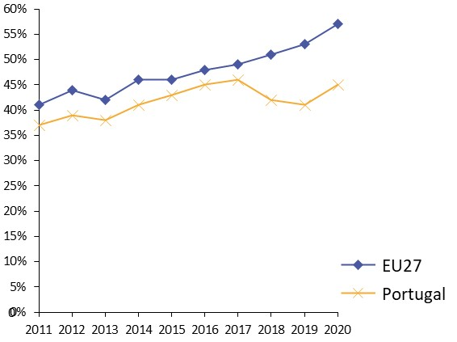
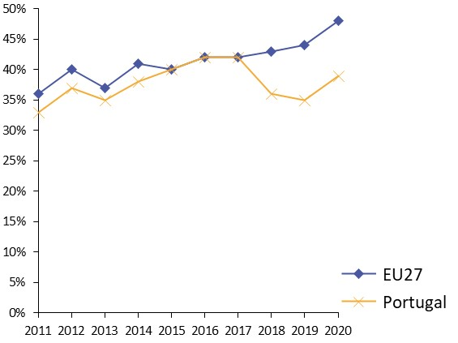
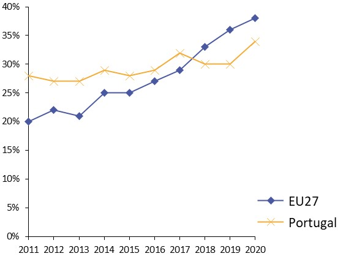
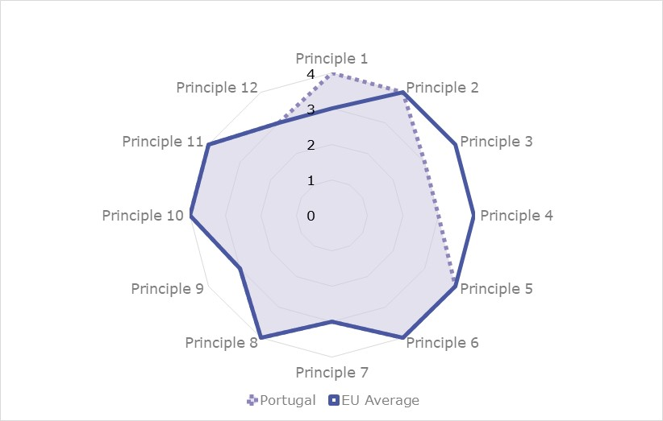
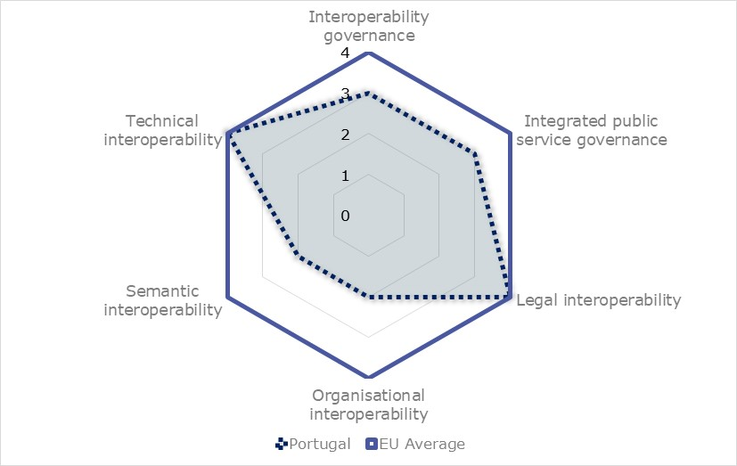
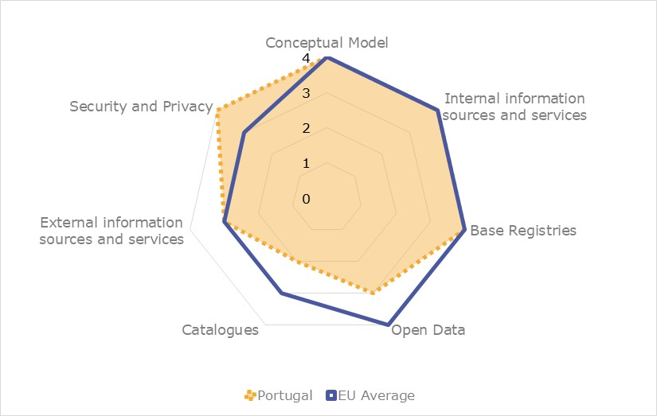
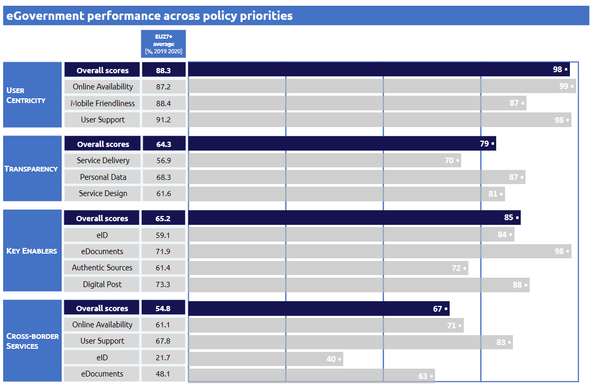

Digital Public Administration factsheet 2021
Portugal
[Grab your reader’s attention with a great quote from the document or use this space to emphasize a key point. To place this text box anywhere on the page, just drag it.]
Table of Contents
Digital Public Administration factsheet 2021
2 Digital Public Administration Highlights 11
3 Digital Public Administration Political Communications 13
4 Digital Public Administration Legislation 22
5 Digital Public Administration Governance 32
6 Digital Public Administration Infrastructure 39
7 Cross-border Digital Public Administration Services for Citizens and Businesses 65
Please note that the data collection exercise for the update of the 2021 edition of the Digital Public Administration factsheets took place between March and June 2021. Therefore, the information contained in this document reflects this specific timeframe.
Country
Profile
1
Country Profile
Basic data
Population: 10 297 081 inhabitants (2020)
GDP at market prices: 202 440.5 million Euros (2020)
GDP per inhabitant in PPS (Purchasing Power Standard EU 27=100): 77 (2020)
GDP growth rate: -7.6 % (2020)
Inflation rate: -0.1 % (2020)
Unemployment rate: 6.9 % (2020)
General government gross debt (Percentage of GDP): 133.6 % (2020)
General government deficit/surplus (Percentage of GDP): -5.7 % (2020)
Area: 92 212 km2
Capital city: Lisbon
Official EU language: Portuguese
Currency: Euro (EUR)
Source: Eurostat (last update: 09 July 2021)
Digital Public Administration Indicators
The following graphs present data for the latest Digital Public Administration Indicators for Portugal compared to the EU average. Statistical indicators in this section reflect those of Eurostat at the time the Edition is being prepared.
Percentage of individuals using the internet for interacting with public authorities in Portugal | Percentage of individuals using the internet for obtaining information from public authorities in Portugal |
 |  |
Percentage of individuals using the internet for downloading official forms from public authorities in Portugal | Percentage of individuals using the internet for sending filled forms to public authorities in Portugal |
|  |

Interoperability State of Play
In 2017, the European Commission published the European Interoperability Framework (EIF) to give specific guidance on how to set up interoperable digital public services through a set of 47 recommendations. The picture below represents the three pillars of the EIF around which the EIF Monitoring Mechanism was built to evaluate the level of implementation of the EIF within the Member States. It is based on a set of 71 Key Performance Indicators (KPIs) clustered within the three main pillars of the EIF (Principles, Layers and Conceptual model), outlined below.

Source: European Interoperability Framework Monitoring Mechanism 2020

Source: European Interoperability Framework Monitoring Mechanism 2020

Source: European Interoperability Framework Monitoring Mechanism 2020

Source: European Interoperability Framework Monitoring Mechanism 2020
eGovernment State of Play
The graph below presents the main highlights of the latest eGovernment Benchmark Report, an assessment of eGovernment services in 36 countries: the 27 European Union Member States, as well as Iceland, Norway, Montenegro, the Republic of Serbia, Switzerland, Turkey, the United Kingdom, Albania and Macedonia (referred to as the EU27+).
The study evaluates online public services on four dimensions:
- User centricity: indicates the extent to which a service is provided online, its mobile friendliness and its usability (in terms of available online support and feedback mechanisms).
- Transparency: indicates the extent to which governments are transparent about (i) the process of service delivery, (ii) policy making and digital service design processes and (iii) the personal data processed in public services.
- Cross-border services: indicates the extent to which users of public services from another European country can use the online services.
- Key enablers: indicates the extent to which technical and organizational pre-conditions for eGovernment service provision are in place, such as electronic identification and authentic sources.
The 2021 report presents the biennial results, achieved over the past two years of measurement of all eight life events used to measure the above-mentioned key dimensions. More specifically, these life events are divided between six ‘Citizen life events’ (Career, Studying, Family life, measured in 2020, and Starting a small claim procedure, Moving, Owning a car, all measured in 2019) and two ‘Business life events’ (Business start-up, measured in 2020, and Regular business operations, measured in 2019).

Source: eGovernment Benchmark Report 2020 Country Factsheets

Digital Public Administration Highlights
2
Digital Public Administration Highlights
Digital Public Administration Political Communications
The Strategy for Innovation and Modernisation of the State and Public Administration 2020-2023 was launched in July 2020 as a roadmap for modernising the State and the public administration. It encompasses 14 strategic objectives distributed by 4 transformative axes.
Digital Public Administration Legislation
Law Nº 37/2014, of 26 June 2014, with the amendments inserted by the article 407º of Law Nº 2/2020, of 31 March, determines the legal value of the digital identification documents generated with the Id.gov.pt app.
Digital Public Administration Governance
The Strategy for the Digital Transformation of Public Administration 2021-2026 and the corresponding Action Plan for the Digital Transformation 2021-2023 were published on 10 September 2021 (Resolution of the Council of Ministers nº 131/2021), envisioning a «more digital Public Administration: better services, greater value» and encompassing six strategic lines of action: digital public services; data; reference architectures; ICT skills; ICT infrastructure and services; security and trust.
Digital Public Administration Infrastructure
The Interoperability Platform of the Public Administration (iAP) is now connected with the national eDelivery access point, which will allow the implementation of cross border projects.
Digital Public Administration Political Communications
3
Digital Public Administration Political Communications
Specific political communications on digital public administration
Berlin Declaration on Digital Society and Value-Based Digital Government
In December 2020, the Portuguese government signed the Berlin Declaration on Digital Society and Value-Based Digital Government, thus re-affirming its commitment – together with other EU Member States – to foster digital transformation in order to allow citizens and businesses to harness the benefits and opportunities offered by modern digital technologies. The Declaration aims to contribute to a value-based digital transformation by addressing and strengthening digital participation and digital inclusion in European societies.
Strategy for the Digital Transformation of Public Administration 2021-2026
The Strategy aims to deliver simpler and more inclusive, integrated and transparent services to citizens and businesses, focusing on six lines of action:
- Digital public services;
- Valorization of Data;
- Reference architectures;
- ICT skills;
- ICT infrastructure and services;
- Security and trust.
As for the Action Plan, it encompasses the priority measures to be developed until 2023, when an interim assessment will be carried out and an extension for the 2024-26 period will be elaborated. The Strategy for the Digital Transformation of Public Administration 2021-2026 includes a report about the implementation of the previous ICT 2020 Strategy (effective between 2017-2020), which encompassed over 700 projects to improve public services with estimated benefits of 721 million euros.
SIMPLEX Programme
SIMPLEX is the Portuguese flagship simplification and modernisation programme. It follows a citizen-driven approach and has a strong focus on co-creation, with the ultimate goal of simplifying as much as possible citizens and businesses’ everyday life as well as their interaction with the public administration. SIMPLEX pursues in one single governmental programme the objectives of better regulation, administrative burden reduction, service interoperability, digitisation, red tape cutting and digital government promotion.
The responsibility for the programme lies with the Minister for State Modernisation and Public Administration, directly supported by the Prime Minister. The Secretary of State for Innovation and Administrative Modernisation is in charge of coordinating and monitoring the programme, with the technical support of the Administrative Modernisation Agency. Furthermore, SIMPLEX includes a Focal Point Network, consisting of representatives of the various Ministries.
The programme is highly inclusive and innovative, involving citizens, entrepreneurs and public servants in determining and designing the initiatives to be implemented by the public administration. Participants are offered channels for their involvement through the organisation of nationwide meetings and design brainstorming sessions, ‘Start-up SIMPLEX’ competitions and the SIMPLEX website.
Overall, SIMPLEX has already launched over 1 600 simplification measures.
SIMPLEX has proven to be a successful and replicable model, with an average annual execution rate exceeding 88.59% (2016-2019) and a very positive feedback from the programme’s stakeholders. In 2019, an Ernst & Young evaluation, commissioned by the European Commission in coordination with the Portuguese government, analysed the impact of 40 measures of SIMPLEX 2016 and 2017, concluding that they represented a yearly net saving of EUR 170.1 million and 15 million working hours, plus a potential additional benefit for the economy corresponding to EUR 89 million. The effectiveness of the SIMPLEX methodology has been further recognised by the European Institute of Public Administration, which awarded SIMPLEX the European Public Service Award 2019 in the European and national category.
Simplex 2020/2021 – Part of our lives
The 2020/2021 edition is organized around two main blocks, ‘Better Public Service’ and ‘Modern and Innovative Public Administration’, including a total of 158 measures.
A standout measure of this edition is ‘My Data’, which will allow citizens to know when and why the public sector interchanges personal information relating to them. This initiative will also ensure that citizens are able to accept these transactions and know what information the public sector has about them.
The COVID-19 pandemic implied significant transformations in public administration, namely: (i) increased delivery of digital public services; (ii) accelerated collaborative processes; (iii) increased number of innovative practices; and (iv) massive adoption of remote work. Facing these transformations was only possible as a result of the investment in administrative modernisation and the cultural transformation of the public administration under the SIMPLEX Programme, allowing to identify 195 initiatives to promptly respond to the pandemic.
This initiative is structured around five main axes: inclusion, education, qualification, specialisation and research. It includes a variety of measures to be implemented by different governmental bodies in collaboration with the private sector, academia and civil society.
Strategy for Innovation and Modernisation in the State and Public Administration
The Strategy for Innovation and Modernisation in the State and Public Administration 2020-23, promoted by the area of government responsible for State modernisation and public administration, was developed through a participatory process that involved public servants, the academia and the private sector.
The strategy was approved by the Resolution of the Council of Ministers No. 55/2020 and presented in July 2020 as a roadmap for modernising the State and the public administration, with 14 strategic objectives distributed among four transformative axes:
- Investing in People, aiming to attract and mobilize public officials, including through renewed and dynamic leadership models;
- Developing Management, aiming to strategically manage employees and leverage performance through business models focused on value creation;
- Exploring Technology, aiming to provide citizens and businesses with secure, accessible, integrated and seamless services; and
- Strengthening Proximity, aiming to bring decision-making and public action closer to citizens.
These objectives are achieved through cross-cutting and sectoral measures, uniting government in a common purpose: developing a permanent transformative capacity in public administration to respond promptly to and anticipate the challenges it must address.
Action Plan for the Digital Transition
The action plan consists of 12 flagship initiatives in total. In particular, the pillar relating to the digitisation of the State includes the following:
- Digitalisation of the 25 public services most used by citizens and companies, aiming to ensure simplification of and online access to the 25 most used administrative services, and to ensure that all citizens have access to digital public services;
- Increase in the offer and translation of digital services of interest to the internationalisation of the ePortugal Portal, aiming to ensure that the services provided on the ePortugal Portal have multi-language capabilities and information content, and electronic forms translated into languages other than Portuguese, ideally always by default into English;
- Implementation of a cloud strategy for the public administration, aiming to create a strategic framework for the integration of public administration in the cloud through the adoption of computing tools that work in the ‘cloud’;
- Simplification of the procurement of ICT services by the public administration, aiming to adopt an exceptional scheme for the acquisition of goods and services within the scope of information and knowledge technologies, as per the specific legislation.
Collaborative Work Plan
The Collaborative Work Plan, whose 3rd edition ended in the 1st quarter of 2021, aims to address the challenge of bringing together transversal and multidisciplinary teams from different public administration and civil society organisations to discuss common issues. The primary goal has been evolving since the 1st edition and in the latest one was to quickly produce support materials for the public sector teams that due to the pandemic were working in new environments. Since April 2020, 45 projects have been produced, focusing on tools for remote working, daily organisation, leadership and digital public services design. As part of the plan, 26 webinars were held, with over 18 500 participants.
Interoperability
No political communication has been adopted in this field to date
Key enablers
Access to public information
National Action Plan for Open Administration
The co-creation of the second NAP is ongoing and the new plan is due for publishing in August 2021.
eID and Trust Services
Digital Identification Mechanisms
The development of Portuguese digital identification mechanisms and the promotion of their uptake by citizens, businesses and the public administration itself are at the top of the political agenda, with ongoing initiatives targeting different end-users. The constant addition of new features (e.g. mobile eSignature), the swift integration of these mechanisms in digital public services delivered by different areas of government and their steady adoption by the private sector (e.g. banking, utilities) are some of the positive outcomes of setting electronic identification (eID) as a political priority.
Security aspects
National Strategy for Cyberspace Security 2019-2023
The National Strategy for Cyberspace Security 2019-2023 (Resolution of the Council of Ministers No. 92/2019), published on 5 June 2019, aims to deepen the security of network and information systems as a way to protect cyberspace of national interest and promote its free, safe and efficient use for all citizens, companies, and other public and private entities.
This strategy was developed based on the lessons learned and the developments in the digital domain since the approval of the first version in 2016 and provides for an annual assessment by the High Council of Cyberspace Security. It establishes three strategic objectives for 2019-2023:
- Maximising resilience, i.e. overcoming the threats that could compromise cyberspace of national interest’s security;
- Promoting innovation, i.e. affirming the cyberspace as a domain for the economic, social and cultural development and prosperity; and
- Generating and ensuring resources, i.e. contributing to achieving adequate resources to guarantee the country’s cyberspace security capacity.
In the context of the objectives established by the National Strategy for Cyberspace Security 2019-2023, the National Cybersecurity Centre created the Public Administration Cybersecurity Forum, which aims to identify and disseminate cybersecurity best practices within public administration and to foster information sharing at management and policy levels.
Furthermore, a Working Group for Cybersecurity was created in May 2019, involving representatives of six public entities: the General Directorate for School Administration (DGAE), the General Consumer Directorate (DGC), the Food and Economic Safety Authority (ASAE), the Agency for Competitiveness and Innovation (IAPMEI),the National Cybersecurity Centre (CNCS) and the National Innovation Agency (ANI). It aims to (i) establish good cybersecurity practices for businesses and consumers; (ii) explore the opportunities that cybersecurity offers as an economic sector; and (iii) develop initiatives aimed at disseminating cybersecurity solutions and good practices among businesses, particularly small and medium-sized enterprises (SMEs), as well as among consumers.
Interconnection of base registries
No political communication has been adopted in this field to date.
eProcurement
No political communication has been adopted in this field to date.
Domain-specific political communications
Closer Justice Plan 2020-2023 (Justiça + Próxima 2020-2023)
- Efficiency, by simplifying and dematerialising procedures;
- Innovation, by modernising justice;
- Proximity, by offering citizens clear, transparent and accountable information; and
- Humanisation, by valuing tangible and intangible resources.
The methodological approach called for scheduled measures to be implemented in successive waves, with periods of analysis in collaboration with the judicial organisations and officials responsible for their implementation. The Directorate-General for Justice Policy is responsible for managing and monitoring the plan, in close coordination with the Ministry. By the end of 2019, 131 measures were completed out of the 197 planned.
A second edition of the Closer Justice Plan 2020-23 is currently underway with 141 measures, some of which were included in the first edition but were not completed by the end of 2019. Until the end of February 2021, 24 measures were completed out of the 141 planned.
Consigo - Social Security Modernisation Strategy
The Consigo Strategy aims to establish a more customer-centred approach, supported by innovative and differentiating technological solutions, to strengthen the right to social security for all citizens, based on the strategic values of trust, simplification, transparency and innovation.
This strategy includes 34 initiatives, fully implemented and grouped into four major areas of intervention:
- Relationship with customers;
- Social benefits;
- Declarations and contributions; and
- Social security efficiency.
Digital Skills Training
Digital skills is a strategic training area for the public administration, as established through Order No. 3431/2019 of 19 March 2019 of the Minister for Finance, following a proposal by the National Institute of Administration (INA). This strategic training area is implemented in the INA Training Centre through the Programme for the Development of Digital Skills, which includes four training syllabuses with different training paths:
- Training programme for zero infoexclusion, aimed at eliminating infoexclusion and improving the ability to use essential tools;
- Training programme for the digital transformation of public administration, focused on skills development in emerging areas;
- Training programme for digital tools, developing the ability to work with word‑processing tools, edit spreadsheets and manage databases; and
- Training programme for the computer science professionals, aiming to provide and update specific ICT skills.
Additionally, INA is providing specific training programmes for public sector leaders (middle and senior managers), with a focus on understanding digital trends, supporting digital procurement and managing change driven by digital technology within public sector organisations.
More Science, Less Bureaucracy Programme
The More Science, Less Bureaucracy Programme promotes rationalisation and administrative simplification for the scientific community, aiming at promoting the scientific, social and cultural responsibility of all actors operating in the fields of science and technology. In this context, and considering the programme’s broad scope, it is worth highlighting some already-implemented initiatives, namely Ciência ID (unique ID for scientists) and Ciência Vitae (national system for scientific CVs management linked to Ciência ID), plus a central element for monitoring scientific and technological activity, and a support system for the modernisation of public administration. The measures related to the SIMPLEX Programme, such as the NAU Platform (online platform for remote education and training), are also relevant.
Emerging technologies
Strategy for the Digital Transformation of Public Administration 2021-26
The “valorization of data” pillar of the Strategy for the Digital Transformation of Public Administration 2021-26 explicitly addresses the adoption of emerging technologies (such as data science, AI or machine learning) by the public administration. Standout measures in this domain include the creation of an Observatory of Digital Innovation and Emerging Technologies and providing guidelines for adoption/evaluation of public sector solutions that make use of data science, AI and machine learning (among other emerging technologies), in accordance with ethical, responsibility and transparency principles
- Promoting a better society;
- Fostering AI skills and ‘digital minds’ for all;
- Promoting new jobs and developing an economy of AI services;
- Fostering Portugal as a living lab for experimenting new developments;
- Securing AI niche markets through key specialised services in Portugal;
- Contributing to generating knowledge and new developments through AI research and innovation; and
- Providing better public services for citizens and businesses, and adopting evidence-based approaches in public policies and decision-making processes.
More in general, the strategy aims to improve the frontline position in fundamental and applied AI research and increase the qualifications of the labour force and the added value brought by AI technologies to the economic growth.
ACP.2030 encompasses three major domains of activity:
- Creating a national supercomputing infrastructure at the service of research and innovation;
- Developing and retaining high-value people with advanced computing skills; and
- Implementing a public policy info-structure to fill in the gap between infrastructures and people in a way that fosters the creation of high-value services and software.
The Digital4COVID platform is another initiative that arose from the need to coordinate an integrated response to COVID-19, involving the associated electronics and computer labs in the development of projects to tackle the pandemic. Among the four projects developed, the tracing app StayAwayCovid ended up being successful and was publicly presented by the Prime Minister in September 2020.
SIMPLEX
The 2020/21 edition of the national administrative simplification programme, SIMPLEX, includes several measures that make use of emerging technologies such as AI or data analytics to deliver more efficient public services.
Support System for Digital Transformation of the Public Administration
The Support System for Digital Transformation of the Public Administration (SAMA2020) is responsible for distributing European funds to support the modernisation and efficiency of the Portuguese public administration. In 2019 it opened a EUR 10 million tender to promote the adoption of advanced technologies in the field of AI and data science applied to the public administration. The objective is to stimulate experimental and innovative solutions to process the large volumes of data collected and managed by the public administration. So far, 43 projects on AI have been approved under SAMA2020.
In general, there is a growing demand for SAMA2020’s general funding of projects in the area of emerging technologies, such as IA, data science and Internet of Things (IoT). Furthermore, all approved projects have to comply with specific technological requirements that include many key enablers of the Portuguese digital government/digital transformation ecosystem, namely the Interoperability Platform of the Public Administration (iAP), the eID, the National Digital Interoperability Regulation (RNID), the General Data Protection Regulation (GDPR) and cybersecurity, among others.
Strategy for Innovation and Modernisation in the State and Public Administration
The Strategy for Innovation and Modernisation in the State and Public Administration 2020-23 highlights the use of AI to improve the interoperability and integration of services, and the decision-making capacity of the public administration.
Public Administration Cloud Strategy
The CTIC created a working group (CloudAP) that presented a Strategy for Cloud Computing to be adopted by the public administration with a view to increasing efficiency and flexibility, and pushing forward innovation and digital transformation.
Digital Public Administration Legislation
4
Digital Public Administration Legislation
Specific legislation on digital public administration
Single Digital Address and Public Service of Electronic Notifications
Decree-Law No. 93/2017, of 1 August 2017, created the unique digital address, linking the electronic notifications public service to a unique digital address. The electronic notifications public service, associated to the single digital address, is regulated by Ordinance No. 365/2017, of 7 December 2017.
TIC APP – Centre for Digital Competences of the Public Administration
The Resolution of the Council of Ministers No. 22/2018 established TicAPP – the Centre for Digital Competences of the Public Administration - as a specialised skill centre for the digital transformation of the public administration. In 2019, it started its operation within AMA to support different government areas in the process of digital transformation.
TicAPP’s role is to act as a centre of digital expertise, developing projects across public administration in the fields of:
- Digital architectures: collaborating with public entities in defining and planning their corporate architecture and information systems;
- Digital transformation: providing support in process modelling, optimisation, simplification and integration through IT resources; gathering, analysing and defining information systems requirements, in collaboration with public entities, including the exploration, design and development of prototypes and proofs of concept (PoCs); and elaborating specifications and technical clauses for the contracting of information systems, specifically in the areas of software and services;
- Data science: developing quantitative and predictive models to use available data to support the political and administrative decision-making process.
It also supports the development and implementation of some SIMPLEX emerging technology measures in the domains of AI (gIAp) and blockchain (Participa 5.0).
Decree-Law on Digital Services
Decree-Law No. 74/2014, of 13 May 2014, further amended by Decree-Law No. 105/2017, of 29 August 2017, introduced the rule of digital provision of public services by default. In parallel, it enshrined digital assistance via a Citizen Spot network as an essential complement, where those who cannot, will not or do not know how to use digital tools can benefit from the support and guidance of a public servant/digital mediator. The objective is to give all citizens the possibility to access digital services.
Decree-Law on Administrative Modernisation
Decree-Law No. 135/1999, of 22 April 1999, further amended by the Decree-Law No. 73/2014, approved in May 2014, introduced important administrative modernisation measures, including the Once-Only principle, according to which citizens shall not be obliged to give the public administration the same document twice. The Once-Only principle implies several standards being applied, particularly relating to administrative communications.
Decree-Law on Zero Licensing
The Portuguese Zero Licensing Programme is one of the most representative initiatives of the eGovernment agenda. Its main objective is to considerably simplify the licensing procedures necessary to carry out several economic activities by reducing red tape through an electronic single contact point. One of the first objectives was achieved in April 2011, following the approval of Decree-Law No. 48/2011, of 1 April 2011, which provided for a significant reduction in the required licences. It was further strengthened with the approval of Decree-Law No. 10/2015, of 16 January 2015, which regulated the entire procedure for food and beverage establishments, as well as for trade and services establishments.
Decree-Law on the Responsible Industry System
Decree-Law No. 169/2012, of 1 August 2012, introduced the Responsible Industry System (SIR), which lays down the necessary procedures for industrial activities. The SIR was first amended by Decree-Law No. 73/2015, of 11 May 2015.
All SIR procedures are carried out electronically on the SIR Platform, which is accessible through the Entrepreneur’s Desk and competent public entities’ in-service counters.
Interoperability
Resolution of the Council of Ministers No. 91/2012
The Resolution of the Council of Ministers No. 91/2012, of 8 November 2012, introduced the National Digital Interoperability Regulation and the standards that can be used to provide interoperability in public administrations’ information systems. It was revised by the Resolution of the Council of Ministers No. 2/2018, of 5 January 2018.
Resolution of the Council of Ministers on the Interoperability Platform for the Public Administration
The Resolution of the Council of Ministers No. 42/2015, of 19 June 2015, foresaw the preferential adoption of the Interoperability Platform for the Public Administration (iAP) as primary means for exchanging information among public administration departments and entities.
Key enablers
Access to public information
Law on Access to Administrative Documents
Article 268(2) of the Portuguese Constitution provides for the fundamental right of access to administrative archives and registries, except for information related to State security, criminal investigation and personal privacy.
In addition, Law No. 26/2016, of 22 August 2016, regulates access to administrative and environmental data, as well as reuse of administrative documents. It transposes the European Parliament and Council Directive 2003/4/EC on public access to environmental information, and European Parliament and Council Directive 2003/98/EC on the re-use of public sector information. One of its highlights is the implementation of the principle of active information dissemination, by which entities falling within the scope of the law publish a set of updated information on their websites, without the citizen having to ask for it.
Law No. 26/2016 is undergoing a process of amendment, to be carried out by 17 July 2021, in order to comply with the duty to transpose Directive (EU) 2019/1024 of the European Parliament and of the Council of 20 June 2019 on open data and the reuse of public sector information.
Science, Technology and Higher Education
The Resolution of the Council of Ministers No. 21/2016, of 11 April 2016, establishes guiding principles for the implementation of a national policy on open science and universal access to knowledge. It has direct implications at the level of public information access, knowledge sharing and dissemination, and the preservation of information for its reuse.
Decree-Law on the Accessibility of Public Sector’s Websites and Mobile Applications
Decree-Law No. 83/2018, of 19 October 2018, transposed Directive (EU) 2016/2102 on the accessibility of public sector’s websites and mobile applications into Portuguese law.
According to this decree-law, all public sector bodies, including local administrations, shall comply with the EU standards and best practices adopted, namely WCAG 2.1 from W3C, thus making their websites and mobile applications more accessible to users and allowing everyone, including people with disabilities, to use the available information.
The AMA shall ensure that the public sector’s websites and mobile applications comply with these rules. For that purpose, a set of tools have been made available, including an Accessibility and Usability Kit for public sector’s websites, the Accessibility WCAG 2.1 Validator, the Accessibility Statement Generator and the Usability Seal of Excellence.
State Organisation Information System
The State Organisation Information System (SIOE), reformulated and expanded by Law No. 104/2019, of 6 September 2019, is an information system on the characterisation of public entities that integrate the universe of public administrations in the national accounts, as well as on the social activity of public employers.
The afore-mentioned law, besides extending the information scope to the social activity of public employers, also enlarged the fields of data collection to the characterisation of public employers, identification data and other employees’ personal data.
This extension of data collection and processing with regard to employees’ data is intended to achieve the following purposes:
- Collecting, preparing and producing information and indicators within the framework of labour market statistics and other management and planning indicators;
- Planning, implementing, monitoring and evaluating the budgeting and implementation of human resource management policies;
- Managing, controlling, monitoring and evaluating employees’ movements;
- Managing and controlling the system of time credits and temporary transfers of public employees due to public interest within the scope of trade union activity and under the terms foreseen in the General Law of Labour in Public Functions; and
- Ensuring the electronic exchange of data within the social security systems coordination framework.
With regard to public employers’ data, social balance sheets or equivalent management instruments are prepared by each public employer, through access to their own data, compiled in specific tables, and to relevant indicators to be included in their planning and management instruments.
The SIOE may also serve as a platform for electronic processing of administrative procedures, information provision and decision-making:
- Among public employers, and among these and other national entities, without sharing or using any employees’ identification data or personal data; and
- Among public employers and the institutions of the EU or its Member States, using workers’ identification data and other personal data, limited to the strict pursuit of the objectives set out.
The purposes of the SIOE may be pursued by sharing data via web services or by using open standards, in accordance with the law.
eID and Trust Services
Law on Citizen Card
Law No. 7/2007, of 5 February 2007, introduced the Citizen Card and regulated its issuance, replacement, use and cancellation. Article 18 outlined the provisions for digital certificates, i.e. electronic documents using a digital signature. The eSignature based on a qualified certificate is optional, and can only be activated and used by citizens over the age of 16. No eSignature based on a related qualified certificate can be activated if the holder requesting a Citizen Card is deemed unsuitable.
Law No. 32/2017, of 1 June 2017, introduced significant changes to the Citizen Card, in particular the integration of the Professional Attributes Certification System (SCAP), which allows citizens to use their national eID card to digitally sign not only as citizens, but also as certified professionals of a specific recognised profession (e.g. as an engineer or as a physician). The law is in the process of being amended to comply with Regulation (EU) 2019/1157 of the European Parliament and of the Council, of 20 June 2019, which aims to strengthen the security of Union citizens’ identity cards, and residence permits issued to citizens of the Union and their family members.
Trust Services
Decree-Law No. 12/2021, of 9 February 2021, provided the framework for the application of the regime introduced by Regulation (EU) No. 910/2014, of the European Parliament and of the Council, of 23 July 2014, on electronic identification and trust services for electronic transactions in the internal market (eIDAS Regulation). In particular, it regulates the activities of trust service providers established in Portugal, designating and establishing the Portuguese authorities with the powers to carry out the supervisory activities provided for in the regulation, as well as defining the sanctioning framework applicable in case of violation of the regulation’s rules.
At the same time, the opportunity was taken to consolidate the existing legislation both on the validity, effectiveness and probation value of electronic documents, and on the State’s Electronic Certification System - Public Key Infrastructure.
Law on the Digital Mobile Key
Law No. 37/2014, of 26 June 2014, established the Digital Mobile Key, an alternative and voluntary citizens’ authentication system in portals and websites of the public administration. The introduction of Law No. 32/2017, of 26 June 2017, added eSignature features, allowing citizens to digitally sign documents by entering a mobile phone number, followed by a permanent password and a unique, temporary and automatically‑generated numeric code received by SMS or via a specific smartphone app.
Administrative Rule No. 73/2018 is also relevant in this context, as it defines the terms and conditions for use of the SCAP for the certification of professional, business and public attributes through the Citizen Card and the Digital Mobile Key, as is Administrative Rule No. 77/2018, which regulates the use of the Digital Mobile Key for digitally signed documents.
ID.gov.pt
The ID.gov.pt app, launched in January 2019 (for both iOS and Android), is a digital wallet that allows citizens to view, save and share certified versions of their legal documents and ID data in real time. Its activation is simple and secure, and is based on a first authentication with the Digital Mobile Key, which is fully compliant with the EU eIDAS Regulation. These digital documents have the same legal value as the original, paper‑based versions and can be validated by public and private authorities in real time, through a QR code available on the app or by inserting a time-limited code in a reserved area at autenticacao.gov.pt. Furthermore, the user is entitled to download and share certified PDFs of the document(s).
Id.gov.pt is legally supported by Law No. 37/2014º, of 26 June 2014, with the amendments inserted by Article 407 of Law No. 2/2020, which guarantees citizens the portability of their personal data (in compliance with the GDPR) by granting:
- Access to the data contained in their identification documents or issued by public entities through a mobile application made available by AMA (i.e. Id.gov.pt);
- Access to the data contained in the databases of public administration bodies, made available at autenticacao.gov.pt through secure authentication; and
- The same legal value of the original documents to the data obtained/presented through the above-mentioned mobile application (Id.gov.pt).
Security aspects
Law on the Use of Open Standards in Public Administration Information Systems
Law No. 36/2011, approved in June 2011, established the use of open standards in the public administrations’ information systems. This was considered a fundamental step for public institutions’ autonomy and control over their own documents, thus reducing the dependence on businesses and external applications that can properly interpret electronically stored information.
Subsequently, the RNID – originally published in 2012 and updated in 2018 by the Resolution of the Council of Ministers No. 2/2018 – established (among other standards) the OpenDocument Format (ODF) 1.2 as a mandatory standard.
Law on the Protection of Personal Data
Law No. 41/2004, of 18 August 2004, transposed into national law Directive 2002/58/EC concerning the processing of personal data and the protection of privacy in the electronic communications sector, except for Article 13, which concerned unsolicited communications. This legislation applies to the processing of personal data within the context of publicly available electronic communications services and networks, while complementing the provisions of Law No. 67/1998 (Law on the Protection of Personal Data). Its provisions ensure protection of the legitimate interests of subscribers who are legal entities to the extent that such protection is consistent with their nature.
On 8 August 2019, Law No. 58/2019 was published, establishing the application of Regulation (EU) 2016/679 of the European Parliament and the Council of 27 April 2016, on the protection of individuals with regard to the processing of personal data and to the free movement of such data (GDPR) in Portugal, thus repealing Law No. 67/1998.
Cybersecurity Legislation
Decree-Law No. 136/2017, of 6 November 2017, defined the structure of the Portuguese National Cybersecurity Centre, and Law No. 46/2018, of 13 August 2018, established the legal regime for the security of cyberspace, transposing Directive 2016/1148 of the European Parliament and of the Council, of 6 July 2016, on measures to ensure a common level of network and information security throughout the Union, and adding public administration to its scope.
Moreover, the National Strategy for Cyberspace Security 2019-2023 (Resolution of the Council of Ministers No. 92/2019) was published on 5 June 2019.
In addition, the Strategy for Innovation and Modernisation in the State and Public Administration 2020-2023 (measure 8.4) also aims to strengthen the cybersecurity levels of public administration bodies through the National Reference Framework for Cybersecurity.
Interconnection of base registries
Civil Registry
The Civil Registry was first regulated by Decree Law No. 131/1995 and later repeatedly modified. This law prescribed the civil facts that must be registered, identified the civil registries and their mandates, and described the archiving procedures.
Commercial Registry
The Commercial Registry is regulated by Decree Law No. 403/1986. This law established the different types of businesses, identified the authorities responsible for the registration and described the registration process, among others. Several amendments were made to this legislation.
Land Registry
The Land Registry is regulated by Decree Law No. 224/1984. It identifies the facts that must be registered and describes the registration process. This legal act was revised multiple times.
Vehicle Registry
The Vehicle Registry is regulated by Decree Law No. 54/1975 and subsequent amendments. This legislation describes a complex registration system for vehicles.
Sharing Information between the National Commercial Registry and EU Member States
Decree-Law No. 24/2019 established the rules applicable to the sharing of information between the National Commercial Registry and the commercial registries of other EU Member States in accordance with Directive 2012/17/EU.
eProcurement
eProcurement Legislation
The Public Procurement Code (PPC), approved by Decree-Law No. 18/2008, of 29 January 2008, transposed the following EU public procurement acts:
- Directive 2014/23/EU of the European Parliament and of the Council of 26 February 2014 on the award of concession contracts;
- Directive 2014/24/EU of the European Parliament and of the Council of 26 February 2014 on public procurement and repealing Directive 2004/18/EC;
- Directive 2014/25/EU of the European Parliament and of the Council of 26 February 2014 on procurement by entities operating in the water, energy, transport and postal services sectors and repealing Directive 2004/17/ EC;
- Directive 2014/55/EU of the European Parliament and of the Council of 16 April 2014 on electronic invoicing in public procurement; and
- Delegated Regulation (EU) 2019/1828 of the European Commission amending Directive 2014/24/EU of the European Parliament and of the Council regarding thresholds for public supply contracts, public service contracts and public building contract, as well as for design contests.
The application rules for the PPC are further defined by the following ordinances:
- Ordinance No. 371/2017, of 14 December 2017, defines notice templates for the types of open procedures foreseen by the code, and the rules and conditions for the sellers to present legal documentation for the pre-award phase of public contracts; and
- Ordinance No. 57/2018, of 26 February 2018, provides guidance and the technical data blocks to be registered on the national public contract register (BASE Portal), and defines the terms for public buyers to demand labels, test results, certifications and other means of proof. It was updated by Ordinance No. 284/2019, of 2 September 2019, which provides for further data on market prices for goods and services, as well as electronic invoicing.
Law No. 96/2015, of 17 August 2015, regulates the availability and use of electronic platforms for public procurement. Currently, two platforms are used for procurement: (i) the BASE Portal, an online platform that enables the processing of contracts in the context of public procurement both in the pre- and post-award phase; and (ii) the Plataforma Eletrónica de Compras, a central online platform that manages a series of public eProcurement procedures, including eInvoicing, in the context of the framework contracts established by the Government Shared Services Entity (eSPap).
Finally, Decree-Law No. 72/2018 requires the creation of the National State Suppliers Portal, whose purpose is to simplify and expedite the procedures to verify that there are no impediments to contracting, as provided for in the Public Procurement Code.
eInvoicing Legislation
In Portugal, the responsible entity for eInvoicing is the Ministry of Finance. The legislation in this field refers to the Public Procurement Code, which was reviewed in September 2017 (by Decree-Law No. 111-B/2017, of 31 August 2017) in order to transpose Directive 2014/55/EU.
Decree-Law No. 123/2018, of 28 December 2018, defines the governance model for the implementation of electronic invoicing in public contracts.
Decree-Law No. 28/2019, of 15 February 2019, regulates the obligations related to the processing of invoices and other fiscally relevant documents, as well as the book‑keeping obligations, including records and respective supporting documents, that apply to VAT taxable persons.
Decree-Law No. 84/2019, of 28 June 2019, established the State budget execution rules for 2019 within the scope of financial services, defining the conditions for the adoption of the accounting information system provided by eSPap.
Ordinance No. 289/2019, of 5 September 2019, regulates complementary elements of the electronic invoice.
Prior Opinion
- Decree-Law No. 107/2012, of 18 May 2012, regulates the duty to provide information and the issuing of an opinion prior to the acquisition of ICT goods/services costing EUR 10 000 or more. It applies to both direct and indirect administration bodies and State services. AMA is the entity responsible for assessing the compatibility of the acquisition proposals with the strategic objectives for the digital transformation of the public administration (including, for example, an assessment of free and open source software solutions, whose total ownership cost is lower than that of a solution entailing proprietary software or specific licensing).
Domain-specific legislation
Education Legislation
Executive Order No. 6/2018, of 12 April 2018, establishes the school registration procedures and their renewal, and the norms to observe concerning children and pupils’ distribution. In this context, it establishes the digital channel as the preferential one for the registration of pupils.
Decree-Law No. 65/2018, of 16 August 2018, amends the legal regime for higher education degrees and diplomas, previously established by Decree-Law No. 74/2006, of 24 March 2006, improving simplification and dematerialisation.
Decree-Law No. 66/2018, of 16 August 2018, approved the legal regime for the recognition of academic degrees and diplomas of higher education awarded by foreign higher education institutions. In this context, it establishes that the recognition of foreign academic degrees and diplomas of higher education is carried out through an electronic platform.
Decree-Law No. 55/2018, of 6 July 2018, established the curriculum for primary and secondary education, and the guiding principles for learning assessment. In line with the priorities of simplification and dematerialisation of the public administration, it provides that the certificates and diplomas templates for the various educational and training paths should be issued by schools in an electronic format.
The Resolution of the Council of Ministers No. 30/2020 approves the Action Plan for the Digital Transition, which recommends the provision of individual equipment to students and teachers (in various delivery phases), and provides for the guarantee of free mobile connectivity for students and teachers and access to quality digital educational resources (e.g. digital manuals and repositories of digital educational resources (RED)), as well as a strong commitment to a ‘digital teacher’ training plan.
Digital Skills Training
Order No. 3431/2019, of 19 March 2019, establishes training in digital skills as a strategic area for the public administration.
Ordinance No. 250-A/2020, of 23 October 2020, creates the Programme ‘Jovem + Digital’, targeting the development of digital skills by young adults aged between 18 and 35, with the strategic objective of enhancing the quality, efficiency and agility of training and professional qualification.
Code of Criminal Procedure
Law No. 1/2018, of 29 January 2018, amended the Code of Criminal Procedure, allowing to make notifications to legal representatives by electronic means.
Foreign Languages in the Civil Registry
Decree-Law No. 51/2018, of 25 June 2018, ensured that the documents to be registered in the Civil Registry can be written in foreign languages. To apply for such registration, applicants must make an appointment online.
Online Certificates for Organisations
Decree-Law No. 52/2018, of 25 June 2018, prepared the creation of online certificates for organisations. These certificates allow for an electronic search of organisations on the constantly updated Central Registry of Organisations.
Electronic Processing of Cases in the Administrative and Fiscal Jurisdiction
Law No. 118/2019, of 17 September 2019, amending, among other things, the Code of Procedure in Administrative Courts, modifies procedural regimes within the administrative and fiscal jurisdiction, making it mandatory to process cases electronically in administrative courts. This allows for the speeding up of cases and increases efficiency in the processing of disputes. At the same time, the speeding up of proceedings improves the quality of services offered to citizens by the public administration.
Social Security Legislation
Ordinance No. 358/2019, of 8 October 2019, implemented electronic communications between courts, enforcement agents and Social Security in connection with the provision of social benefits and pensions.
Decree-Law No. 126-A/2017, of 6 October 2017, and Decree-Law No. 136/2019, of 6 September 2019, promote electronic information exchanges, allowing for greater effectiveness of the framework of social benefits in the area of disability.
Law No. 100/2019, of 6 September 2019, concerning the Informal Caregiver Statute, regulates the rights and duties of the caregiver and of the person being cared for, establishing the respective support measures and allowing electronic information exchanges.
Ordinance No. 191/2019, of 24 June 2019, implements the automation of the proof of schooling situation, aimed at obtaining information on the schooling situation for public education students. It simplifies and facilitates citizens’ lives by reducing bureaucracy in the process of proving eligibility to benefits such as family allowances and study grants.
Decree Law No.16-A/2021, of 25 February 2021, implements the ‘Instant Pension’, a SIMPLEX 20/21 measure that allows citizens to request their pension online, through Social Security Direct, with immediate communication of the provisional amount that will be awarded.
Article 154 of Law No. 71/2018, of 31 December 2018, regulates the data interconnection process between the Institute of Employment and Vocational Training and Social Security, thus improving the attribution of public support like the unemployment benefits granted by Social Security.
Decree-Law No. 28/2004, of 4 February 2004, established the electronic remittance of the certificate of temporary incapacity from Health Services to Social Security, allowing, at the time, to take an important step towards the digitisation of processes between distinct bodies of the Portuguese public administration. This allows the payment of sickness benefits with greater speed, without errors due to manual analysis and with total convenience for the citizen.
Ordinance No. 348/2019, of 4 October 2019, regulates the electronic communications between the judicial courts and Social Security within the scope of civil tutelary, and promotion and protection proceedings. This communication was integrated in the SIMPLEX+ Programme and allowed to take a very significant step in the simplification of and relationship between these two entities.
Emerging technologies
Resolution of the Council of Ministers No. 26/2018
The Resolution of the Council of Ministers No. 26/2018, of 15 February 2018, approved the National Digital Competences Initiative e.2030 - Portugal INCoDe.2030. Portugal INCoDe.2030, launched in April 2017, is an integrated public policy programme that aims to strengthen the digital skills of Portuguese citizens, preparing them for the emerging digital-based employment opportunities. This initiative comprises five axes: inclusion, education, qualification, specialisation and research.

Digital Public Administration Governance
5
Digital Public Administration Governance
National
Policy
Minister for State Modernisation and Public Administration
The Minister for State Modernisation and Public Administration is responsible for the modernisation of public administration and digital government.
Alexandra Leitão Minister for State Modernisation and Public Administration Contact details: Ministry of State Modernisation and Public Administration Rua Rosa Araújo, n.º 43 – 2.º 1250-194 Lisbon Tel.: +351 21 0 510 100 Email: gabinete.mmeap@mmeap.gov.pt Source: https://www.portugal.gov.pt/ |
Secretary of State for Innovation and Administrative Modernisation
The Secretary of State for Innovation and Administrative Modernisation is responsible for the modernisation of public administration and digital government.
Maria de Fátima Fonseca Secretary of State for Innovation and Administrative Modernisation Contact details: Ministry of State Modernisation and Public Administration Rua Rosa Araújo, n.º 43 – 1.º 1250-194 Lisbon Tel.: +351 21 0 510 150 E-mail: gabinete.seima@mmeap.gov.pt Source: https://www.portugal.gov.pt/ |
Coordination
Administrative Modernisation Agency
Created in 2007, the Administrative Modernisation Agency (AMA) is a public institute that assists the Ministry of State Modernisation and Public Administration in the areas of digital government, and administrative modernisation and simplification, under the superintendence and tutelage of the Secretary of State for Innovation and Administrative Modernisation.
AMA’s activity is divided in three major areas: (i) digital transformation; (ii) public services delivery (both physical and digital); and (iii) innovation and public participation.
| Sara Carrasqueiro Member of the Board of Directors, Administrative Modernisation Agency (AMA) Contact details: Administrative Modernisation Agency Rua de Santa Marta, 55 1150-298 Lisbon Tel.: +351 21 723 12 00 Fax: +351 21 723 12 20 E-mail: ama@ama.pt Source: https://www.ama.pt |

Council for Information and Communication Technologies in Public Administration
The Council for Information and Communication Technologies in Public Administration (CTIC), created in 2016 by the Resolution of the Council of Ministers No. 33/2016, of 3 June 2016, is the coordination structure responsible for developing and operationalising the ICT strategy and the overall action plan for ICT in the Portuguese public administration. It is intended to effectively articulate with the SIMPLEX Programme to recover measures that take advantage of the transformative potential of ICTs and to implement new measures that will improve the quality of citizens’ lives and reduce the costs for companies. The CTIC brings an ICT governance model in the public administration that is open to society and well-adjusted to the government’s objectives, thereby enabling the effective development of a global ICT strategy.
The CTIC responds directly to the Prime Minister, who delegated this attribution to the Minister for State Modernisation and Public Administration. Its Technical Committee (which includes a representative of each Ministry) is chaired by AMA’s chief executive officer, thus giving that entity a cross-sectorial management role in the Portuguese eGovernment policy domain, with the guidance of the Minister for State Modernisation and Public Administration.
The mandate of the Council was extended until December 2023, through the Resolution of the Council of Ministers No. 84/2020, of 1 October 2020.
Interministerial Network for Administrative Modernisation
The Interministerial Network for Administrative Modernisation (RIMA), established by Decree-Law No. 4/97 and reviewed by Decree-Law No. 72/2014, brings together representatives from all government areas to pursue a collaborative work in the field of administrative simplification and modernisation, and streamline the relationship between the State, citizens and businesses.
In particular, it establishes administrative modernisation measures on the methodology and mechanisms for regulatory impact assessment of normative acts.
Commission for Administrative Modernisation
The Commission for Administrative Modernisation brings together business associations, social partners, consumer protection organisations, professional associations and representatives of both central and local government, with the aim of promoting the sharing of ideas between the different stakeholders and partners in the modernisation of public administration.
Implementation
Administrative Modernisation Agency
The Administrative Modernisation Agency (AMA) implements initiatives to modernise and simplify public administration, focusing on digital transformation, service delivery and public participation.
Individual Government Ministries and Agencies
Individual Government Ministries and Agencies carry out projects within the framework of their competences.
Support
Management Centre for the Electronic Government Network
The Management Centre for the Electronic Government Network (CEGER), under the Prime Minister’s Office, provides IT support to government bodies. It is responsible for the management of all the technological infrastructure of the government network, including maintenance of the Data Processing Centre, technological equipment, systems and the electronic communication network. In addition, CEGER focuses on electronic security and advanced systems in support of government decision-making. It also acts as the certification manager for the State Electronic Certification System - Management of Public Keys (SCEE). Finally, it is the responsible entity for registration of GOV.PT internet sub-domains.
Tito Carlos Soares Vieira Director, CEGER - Management Centre for the Electronic Government Network Contact details: CEGER Avenida Defensores de Chaves, 6 1000-117 Lisbon Tel.: (+351) 213 923 400 Fax: (+351) 213 923 499 Email: info@ceger.gov.pt Source: https://www.ceger.gov.pt/ |
Government Shared Services Entity
The Government Shared Services Entity (eSPap) ensures the development and provision of public services, and designs, manages and evaluates the national procurement system. In addition, it ensures the management of the PVE (State Vehicle Fleet). It supports the development of strategic policies by the Ministry of Finance and the Ministry of State Modernisation and Public Administration in the area of ICT. It also ensures the planning, designing, execution and evaluation of digitisation initiatives of the respective services and organisations.
| César Pestana President of the Board of Directors, eSPap – Government Shared Services Entity Contact details: eSPap Av. Leite de Vasconcelos, 2, Alfragide 2614-502 AMADORA Tel.: +351 214 723 100 Fax: +351 214 723 103 E-mail: cc@espap.pt Source: https://www.espap.gov.pt/ |

Interoperability coordination
Administrative Modernisation Agency
Base registry coordination
Base Registries
As a result of the consecutive eGovernment national strategies and related programmes (e.g. SIMPLEX), many base registries and respective services are currently available online. The Interoperability Platform for the Public Administration (iAP), managed by AMA, is connected to the base registries of social security, finance, health and justice (among others), thus allowing for the collection of specific information within these base registries.
Audit
Court of Auditors
The Portuguese Court of Auditors is in charge of auditing public funds, public revenue and expenditure, as well as public assets, with a view to ensuring that the administration of these resources complies with the law and with the principles of financial responsibility.
Data Protection
National Commission for Data Protection
The National Commission for Data Protection is an independent body with powers of authority that extend throughout the country. It supervises and monitors compliance with the laws and regulations in the area of personal data protection, in full respect of both human rights and the fundamental freedoms and guarantees enshrined in the Constitution and the law.
Subnational (federal, regional and local)
Policy
Minister for State Modernisation and Public Administration
The Minister for State Modernisation and Public Administration is also responsible for the modernisation of public administration and eGovernment at all subnational levels.
Secretary of State for Innovation and Administrative Modernisation
The Secretary of State for Innovation and Administrative Modernisation is also responsible for the modernisation of public administration and eGovernment at all subnational levels.
Secretary of State for Decentralisation and Local Administration
The Minister for State Modernisation and Public Administration is currently responsible for formulating, implementing and evaluating a comprehensive and coordinated policy in agreement with local governments, through the Secretary of State for Decentralisation and Local Administration.
Regions and Municipalities
Regions and municipalities are in charge of policies/strategies within the scope of their competences.
Coordination
Administrative Modernisation Agency
The Administrative Modernisation Agency (AMA) coordinates administrative modernisation programmes and involves, via a very active model, most of the municipalities on how to implement them at regional and local level. Many of the several existing initiatives focus on areas such as co-financing (SAMA), licensing (Zero Licensing and Industrial Licensing) and Citizen Spots (multiservice physical desks for assisted digital service delivery, in partnership with municipalities).
Regions and Municipalities
Regions and municipalities are in charge of policies/strategies within the scope of their competences.
Implementation
Directorate-General for Local Administrations
The Directorate-General for Local Administrations (DGAL) is a service integrated in the Ministry of State Modernisation and Public Administration, whose mission is to design, study, coordinate and implement measures to support local administrations, and to strengthen cooperation between the latter and the central administration. Its tasks include, for example, the design and development of information systems in the areas of financial, patrimonial, administrative and human resources management.
Regions and Municipalities & Administrative Modernisation Agency
Regions and municipalities carry out projects within their scope of competences. Furthermore, AMA, besides coordinating them, also plays an active part in the implementation of several initiatives in the areas of licensing (Zero Licensing and Industrial Licensing) and public services delivery (Citizen Shops and Citizen Spots, i.e. one-stop-shops with strong municipalities’ involvement), together with regional/local entities. The Common Knowledge Network electronic platform works as an enabler.
Support
National Association of Portuguese Municipalities
The National Association of Portuguese Municipalities (ANMP) is the representative body of the Portuguese municipalities. It promotes their interests and provides support services in various areas, including ICT and public management.
Interoperability coordination
No responsible body has been reported to date.
Base registry coordination
Base Registries
As a result of the consecutive eGovernment national strategies and related programmes (e.g. SIMPLEX), many base registries and respective services are currently available online. The Interoperability Platform for the Public Administration (iAP), managed by AMA, is connected to the base registries of social security, finance, health and justice (among others), thus allowing for the collection of specific information within these base registries.
Audit
Court of Auditors
The Portuguese Court of Auditors is also in charge of auditing public funds, public revenue and expenditure, as well as public assets at all subnational levels.
Data Protection
National Commission for Data Protection
The National Commission for Data Protection also supervises and monitors compliance with the laws and regulations in the area of personal data protection at all subnational levels.
Digital Public Administration Infrastructure
6
Digital Public Administration Infrastructure
Portals
National Portals
Government
COVID-19 Public Information: EstamosOn
On 18 March 2020, the central administration launched EstamosOn as the single point of contact for all relevant information on the COVID-19 prevention and containment measures. This national platform, directed to citizens, families and companies, offers:
- Communication campaigns to encourage the use of digital public services, promoting the ePortugal Portal as a way to minimize social contact;
- Technological tools (and respective tutorials) to operationalise the telework regime and facilitate the pursuit of day-to-day activities;
- A list of the exceptional measures adopted by each governance area, political communications and relevant legislation, accompanied by FAQs;
- A dashboard with the epidemiological evolution in Portugal;
- A section with questions collected from social networks and answered by the competent health authorities; and
- A complete, consolidated and reliable list of emergency and support contacts created by the various public services.
All contents are also available through a mobile application (Android and iOS) to ensure their dissemination to different end-users.
Open Data (Dados.gov+)
Following international practices in the area (e.g. the US or the UK Data.Gov projects), AMA has committed to the development of a wide and open platform containing all kinds of data from public bodies. The objective of this policy - keeping in mind the right of any citizen to consult public administration information - is to democratise citizens’ access by operating on the means to obtain it. As a result, the Open Data Portal makes available to citizens an extensive range of information from very diverse areas.
The Dados.gov web-portal was relaunched in May 2018 as Dados.gov+, replacing its previous 2012 version. Developed under the SIMPLEX+ Programme, this new version was designed to conform to the best international practices in the field, and incorporate innovative solutions in terms of user experience, content structure, data integration and user licenses.
Managed by AMA and available in open source, Dados.gov is based on the French UDATA platform, which was developed by ETALAB, and already has more than 2 030 datasets. It is free and open to all users that want to access data, but also to citizens and organisations that wish to make data of public interest available. All they need to do is to register, receive their application programming interface (API) key and characterise the dataset they wish to upload. Each dataset can have more than one associated resource and can be published in different and multiple formats, which is one of the features enabling data reuse. It is also possible to index datasets by introducing an URL referring to the origin of the data, which is ideal for entities that already have the information available in their own platforms, like the partilha.justiça.gov.pt from the Ministry of Justice or the Lisboa Aberta portal from the Lisbon City Hall. In case the supplying entity already possesses its own data portal, the publishing process can also be made through data harvest, thus collecting the data in a regular and automated way.
Web Accessibility and Usability Ecosystem
AMA is responsible for developing, promoting and monitoring the implementation of usability and accessibility guidelines and regulations, ensuring compliance with national and international standards and best practices (namely WCAG 2.1 from W3C) and enabling citizens, especially those with disabilities, to access and use public services online.
To this end, AMA made available an ecosystem, aggregated in the acessibilidade.gov.pt web portal, with information about laws, guidelines and best practices, as well as practical online tools for public entities, which include:
- An accessibility and usability kit for public sector’s websites (with all resources available on Github);
- An accessibility WCAG 2.1 validator;
- An accessibility statement generator; and
- A usability and accessibility seal of excellence.
The Usability and Accessibility Seal, in particular, is an indicator of the quality of the contents and services made available online by public and also private entities, according to three levels of compliance with standard requirements: Bronze seal (lowest level of conformity, i.e. to level 1 requirements), Silver seal (intermediate level of conformity) and Gold seal (highest level of conformity).
App.gov.pt
App.gov.pt was launched in 2018 as a directory of mobile apps that centralised various applications made available by the public administration to make life easier for citizens. The app was developed and is managed by AMA, which ensured the indexation of the apps developed by the public bodies themselves.
App.gov.pt is available for both Android and iOS devices.
Bussola.gov
The Bussola.gov is a SIMPLEX initiative that was launched in 2020 as an intranet portal for public servants, aiming to foster sharing of knowledge and experiences, collaboration between entities and the provision of content relating to careers, employment exchange, training, social services and existing protocols.
Tax and Customs Authority
The Ministry of Finance makes available to citizens and companies a web portal allowing for tax submission and fiscal situation consultation, among a wide range of digital services. The Portal das Financas allows secure authentication via the Citizen Card and the Digital Mobile Key. On the web portal, users can consult their tax files and statistics, and conduct simulations. In addition, a complimentary app was made available in 2018 to facilitate the payment of taxes and the consultation of the citizen’s fiscal status.
Advanced functionalities were recently integrated into the system allowing for enhanced usability, the most notable being the automated income tax declaration. The pre-filling of the declaration already began several years ago, culminating in the current fully automated procedure, in which the personal income tax can be settled without any intervention by the taxpayer. Developed as a SIMPLEX measure, this feature automatically prefills the citizen’s income statement with all relevant data conforming to data protection regulations. Then, the declaration receipts and the notification of the final tax calculation can be confirmed electronically.
National Health System
Available since 2016, the National Health System (NHS) Portal provides citizens with online access to a wide range of information and services, made available by the institutions that integrate the Portuguese NHS and other institutions of the Ministry of Health. Since May 2019, the authentication on the NHS Portal is done exclusively through the Citizen Card or Digital Mobile Key eID mechanisms. The portal allows, among other functions:
- Consultation/download of diverse health indicators;
- Access to georeferenced information about health providers; and
- Access to didactic materials on health literacy.
Furthermore, the Citizen’s Area of the NHS Portal integrates electronic health records, facilitating the sharing of information between citizens, health professionals and public health entities. With the aim of providing several digital public services in one place, the Citizen’s Area allows, among other services, to:
- Schedule consultations of primary care, including telehealth;
- Access real-time teleconsultations via the RSE Live Platform (also available via the mobile app MySNS Carteira), implemented throughout the NHS for primary and hospital health care;
- Consult exams;
- Request a digital declaration of attendance at a consultation;
- Activate electronic notifications (via SMS) whenever an accredited health professional consults the patient’s registered clinical information;
- Request the exemption from user fees; and
- Renew chronic medication.
The NHS Portal also includes the National Health System Transparency Portal, which centralises the data produced by the health care entities in a digital and accessible platform, so that this information can be analysed and reused without any restriction by the general population.
Importantly, the provision of health services is omnichannel and, in addition to the features made available on the NHS Portal, includes:
- The mobile application MySNS Carteira, allowing the portability of citizens’ health information and enabling real-time teleconsultations, just as the NHS Portal;
- The onsite SNS24 Balcão, a physical space that facilitates citizens’ access to the various digital services of the NHS and that relies on an enhanced partnership with local municipalities; and
- The SNS24 hotline, a single contact point (phone, email and web) which provides citizens with a set of information and services that facilitate access, ensure equity and simplify the use of the NHS. This hotline includes, since April 2020, a digital service for deaf people provided through video call by six Portuguese sign language interpreters who provide assistance 24 hours a day, 7 days a week. After contact between the deaf citizen and the interpreter, the latter mediates with the health professional at the NHS Contact Centre through a voice response platform. This new functionality could also be used to ensure communication between health professionals and the deaf patient during hospital admission or interactions at the health centre.
In the context of the fight against the COVID-19 pandemic, it is important to highlight the role of SNS24 in promoting the issuance of provisional declarations of prophylactic isolation in an electronic and dematerialised format. Furthermore, the SNS24 ‘Evaluate Symptoms’ functionality was improved to cover COVID-19 so as to allow citizens to evaluate their symptoms, and obtain information and advice regarding non-emergent health problems, thus optimizing the screening.
More in general, the use of digital health technologies has proven to be important to improve access to health services, reduce costs, raise the quality of care and increase the efficiency of health systems. Furthermore, it provides opportunities for the simplification and dematerialisation of processes, and ultimately for the promotion of the long-term sustainability of the NHS.
Social Security - Direct Social Security
Via the Direct Social Security Portal, citizens can access their social security data and perform a wide range of operations, from submitting requests for unemployment benefits, child allowances and leaves to making payments, while enjoying and having access to the information they need regarding their rights and duties in the social security domains. The Portuguese Social Security has been strongly investing in a digital transformation strategy, to respond to the needs of citizens and economic agents, and providing them with a simple, inclusive, intuitive and transparent experience, in self-service mode, with total convenience and autonomy. To this end, the Direct Social Security Portal currently offers over 250 digital services, including the possibility to request pensions and social benefits, consult and update information on a citizen’s contribution career and obtain an integrated overview of all credits and debits. For employers and independent workers, the main services that allow them to fulfil their obligations to Social Security are also available. Finally, the Direct Social Security Portal includes the possibility of authentication with the Digital Mobile Key and the Citizen Card (eID), and presents much information which is already pre-filled, based on back-office automation and interconnection with other public organisations.
The Qualifica Portal aims to ease access to information, services and tools included in the Qualifica Programme (i.e. the National Credit System for vocational education and training and the Qualifica Passport). It targets trainees, employers, and adult education and training providers. It enables citizens to find a Qualifica Centre, to consult education and training opportunities, and to update the Qualifica Passport. The Qualifica Passport is an online tool that records the education and training pathways attained; it also provides guidance to pathways in order to complete or obtain a new qualification, taking into consideration the already attained training and the acquired skills.
National Catalogue of Qualifications
The National Catalogue of Qualifications has been renewed to become more user‑friendly, clearer and more suitable to the needs of its main users. As such, the new website:
- Increases the visibility of the set of activities and skills associated with each qualification, and clearly shows the access way to those qualifications;
- Integrates short and medium-term training courses, for young people and adults, in emerging areas and with added value for the economy, namely in the field of digital competence;
- Integrates Competence Units (UC)/Short Term Training Units (UFCD) related to transversal competences that are of crucial importance for education, training and work, in emerging domains such as ‘soft skills’, new ways of working, digital and leadership;
- Integrates existing essential apprenticeships by qualification, with regard to the different professional courses modalities;
- Allows the search of qualifications by Sectorial Council for Qualification;
- Allows the integration of qualifications structured in UC, based on and described in learning outcomes (AR);
- Allows users to autonomously search for UC integrated in the key competency benchmarks for adult education and training - basic level and secondary level;
- Presents a simpler search of UC/UFCD which allows the use of a broader set of search filters; and
- Allows access to a diverse set of information on the home page, namely catalogue updates, news and events.
National Commission for the Promotion of the Rights and the Protection of Children and Young People
The CNPDPCJ Portal is managed by the National Commission for the Promotion of the Rights and the Protection of Children and Young People (CNPDPCJ) and provides citizens with a wide range of information on: (i) the promotion and protection of children and young people; (ii) activities pursued by the CNPDPCJ and other national entities towards the implementation and realisation of these goals; (iii) the national and international framework; and (iv) the Portuguese system of promotion and protection of children and young people in danger. The CNPDPCJ Portal also conveys updated data and assessment reports on the activities of the Local Commissions for the Protection of Children and Young People, and offers citizens an additional channel for the referral of children and young people at risk or in danger, including by filling out an online form that is automatically forwarded to the competent Local Commission once submitted.
National Statistics
The National Portal for Official Statistics is where citizens, companies and academia supply and obtain official statistics about the Portuguese society. It is available in Portuguese and English, and is free of charge.
The activities of INE are framed by legislation such as the National Statistical System (General Guidelines of National Statistical Activity 2018-2022) and the European Statistical System (European Statistical Programme up to 2020) and comprise data collection through a website where citizens and companies can answer the available survey. Access to administrative data is carried out in a number of areas, in constant pursuit of minimising the burden of data collection operations on enterprises and citizens. Attention is given to significantly reducing the statistical burden, as well as making available to society new statistical indicators, more relevant and appropriate to the users’ needs when making decisions. Furthermore, INE is currently developing an integrated information infrastructure of territorial knowledge in the fields of housing, demographic and social-economic characterisation of families, and commercial, industrial and agricultural activity, for use by public administration, researchers, companies and families.
Online Security Accreditation
The Online Security Accreditation Platform (CRESO), managed by the National Security Office, was developed in the scope of the SIMPLEX Programme and aims to make it easier for citizens and companies to interact with the public administration, whenever it is necessary to obtain or renew a security clearance. For this purpose, the Resolution of the Council of Ministers No. 70/2019, of 11 April 2019, declassified some of the forms required to apply for accreditation.
Justice Portal
The Justice Portal, launched by the Ministry of Justice in 2017, offers a wide catalogue of services related to the area of justice, including courts, registries and notary, reintegration and prison services, and industrial property. The platform congregates in a single website information about the judicial services in a clearer and more accessible language (all contents are written in ‘plain Portuguese’ and can be easily searched by using a simple interface). The platform marked a watershed moment in how citizens, companies and their agents interact with the various services in the justice sector.
The creation of a common network to aggregate the websites of the area of governance of Justice is also relevant with a view to enabling better sharing and availability of content, news, statistics and documents. In this context, the justica.gov.pt network already integrates seven public bodies websites.
CITIUS
CITIUS (the Latin word for ‘faster’ from the Olympic motto) is the project aimed at the dematerialisation of processes in judicial courts developed by the Ministry of Justice, encompassing computer applications for the various judicial operators (judicial magistrates, prosecutors, judicial officials and judicial agents).
The CITIUS service enables the electronic submission of documents for their use in court cases. Lawyers can present evidence and documents to the courts, check their distribution, look up cases and keep track of fees electronically. For civil cases and injunctions, most correspondence can be conducted electronically. Sets of copies and duplicates are no longer needed. The system is secure in that the use of personal, non-transferable electronic certificates is required.
Justice Open Data
Partilha.justica.gov is a portal that acts as an extension of the open government plan in the sector of justice to publish high-value datasets to achieve more participation, more transparency and more justice. More accountability and availability of datasets gives citizens and scholars the opportunity to adopt participatory and collaborative approaches to the management of the Portuguese justice system. Participatory democracy is made by everyone.
Justice Statistics
The Justice Statistical Information System covers several areas, including courts, registries and notaries, police forces and other investigative bodies, alternative dispute resolution bodies, rehabilitation, and the enforcement of sentences and measures. The Justice Statistical Information System includes information collected from different entities and services, which contributes to the portrayal of different topics of interest to society. It also offers geographical information on various justice services.
Electronic Yellow Book
The Electronic Yellow Book, launched as a SIMPLEX+ initiative, allows businesses and citizens to leave a complaint or a suggestion, or write a compliment regarding the public administration and its services, namely the digital ones.
REA
Denunciar
Launched in 2018, the Platform Denunciar was designed as an electronic desk for complaints from businesses and citizens. It is hosted by the General Inspectorate for Agriculture, Sea, Environment and Spatial Planning.
CINERGIA
CINERGIA, the Information Centre for Energy, is an online platform launched in December 2018 by the Portuguese Agency for Energy (ADENE) to disseminate an integrated vision of the energy sector, from production to transport, storage and consumption, contributing to better energy literacy in the civil society.
The portal includes an electric mobility simulator and allows users to plan trips by calculating the carbon footprint associated with different modes of transportation. There is also an energetic map by district, and businesses and citizens can make quizzes to test their knowledge on the subject.
LUA is a platform that integrates environmental permits for industries. It is in full service since 2017 and is managed by the Portuguese Environment Agency.
Public consultations under the responsibility of the Ministry of Environment and Energy Transition take place on the Participa Portal, which was launched in 2015 and is managed by the Portuguese Environment Agency.
The Poupa Energia Portal aims to provide the general public with a tool that allows simulations on how to save on energy bills, and on electricity and natural gas consumption. It was launched in 2017 by ADENE.
Defence
The Ministry of Defence launched the Portuguese Defence Portal in June 2019. The portal is now available and provides the most relevant information about national defence, and its history, regulatory legislation, structure, mission, designations, activities and statistics, among other information. Its development followed best practices in terms of accessibility and usability, and adapts to any type of device. This portal is an important contribution to the government’s objectives to open defence and the military to society, and to recruit more and better and to retain longer. To this end, it discloses the most relevant missions, operations and activities conducted by the armed forces to citizens and the media, presenting them in an informative and accessible language.
The portal also offers centralised access to all defence public services to citizens and companies, as the military branches and the Portuguese Maritime Authority portals, among others of interest, are accessible through this central Ministry of Defence portal. Finally, it also contains a reserved area that allows access to business intelligence information.
Military Recruitment
The Ministry of Defence launched the Military Recruitment Portal, developed as a SIMPLEX project, in June 2019. The purpose of this portal is to provide the Portuguese youth with a more effective information and communication tool in support of military recruitment. The portal aggregates information on recruitment in a personalised way, according to the interested user, and does not require prior knowledge about any of the branches. Therefore, it aims to promote better-informed decisions from candidates joining the armed forces. In other words, it brings the military closer to the recruitment pool, the Portuguese youth.
Captaincy Online
In September 2018, the Captaincy Online Web Portal and its corresponding mobile app were launched. This platform, which resulted from a SIMPLEX+ project, offers information and online services to seafarers, ship-owners, companies and other users on maritime-related licenses, registrations, applications and statements requests, professional diving, maritime courses and other National Maritime Authority (NMA) services, including service cost simulation and electronic payment. It constitutes a one‑stop shop for NMA services and allows automatic data sharing with other governmental entities. The application is also accessible through automatic terminals at the 28 national captaincies, located all over the Portuguese coastline and at the fishing auction houses. Additionally, an app is available for maritime police to conduct surveillance operations, allowing access to the application registered data on seafarers, divers, boats, etc.
National Defence Memory Institutions
In January 2019, the National Defence Memory Institutions Website (NDMI-w) became available. The NDMI-w resulted from a SIMPLEX+ project, and provides centralised online access and a specialised search function for the main defence-related national archives (6), museums (10) and libraries (23), located throughout the Portuguese territory. To date, the platform holds more than 630 000 entries in the documentation and cultural artefacts registries. Furthermore, digital scanning, both in 2D and 3D, is ongoing in all ‘memory institutions’. The aim of this platform is to:
- Provide access to virtually all collections of the national defence-related historical and cultural heritage, through proper metadata identification and digital registration;
- Reinforce conservation mechanisms by leveraging the digitisation process of historical documentation and cultural artefacts;
- Provide scale at national defence level and be a reference within the public administration;
- Create the National Defence Memory Institutions Network, as a means of share-to-gain.
National Defence Institute
The National Defence Institute (NDI) launched a renovated and modern Portal in June 2020. It provides all information on the most known, one-year postgraduate national defence course, and on all other security and defence NDI courses, as well as on other initiatives of the NDI, as seminars, R&D, publications, and national and international cooperation with other bodies. The development of this portal followed best practices in terms of accessibility and usability, and adapts to any type of device. The portal is an important contribution to the government’s objectives to promote knowledge and better information on security and defence, and to open defence to society.
Simplified Business Information
Simplified Business Information (IES) is used for the delivery of declarative obligations related to accounting, taxation and statistics via electronic means and in a completely dematerialised form. All information which businesses have to provide on their annual accounts is transmitted collectively and to a single entity. The IES submission has to be made through the Business Portal, by choosing IES and filling in the form directly, or by opening and sending the corresponding file previously formatted according to specifications laid down by law. Information is then submitted electronically to the IES, and the automatically generated ATM reference has to be retained to allow the payment of the accountability submission registration within five working days.
Public Employment Service
The IEFP OnLine Portal, launched in 2018 by the Ministry of Labour, Solidarity and Social Security, provides citizens and companies with a wide range of services related to job seekers, including unemployment allowances, browsing and applying for training opportunities, advertising jobs, automated cross-matching between employers and job seekers, and applying to support under the framework of labour market policies.
With electronic authentication via Citizen Card or Digital Mobile Key, the portal allows a totally dematerialised relationship between the user and the public employment service, and is responsive to mobile devices.
The development of the portal encompassed different stages:
- In the first phase, with the support of university research centres, the Experimentation Laboratory of the Public Administration (LabX) investigated citizens and businesses’ experience in the use of the IEFP service, obtaining a thorough perspective of the needs and barriers of this service;
- In a second phase and after the creation of the portal, LabX carried out a heuristic analysis, conducted usability tests with real users, and after the tests measured the system usability scale and user satisfaction. During this phase, a set of recommendations were prepared and delivered to the project promoter, aiming at improving the overall user experience in the new IEFP portal and consequently increase the efficiency and quality of this digital public service.
The IEFP OnLine Portal is constantly evolving to provide more services to citizens and companies, considering the needs identified and the feedback that IEFP gets from users’ experiences.
Launched in 2019, the Study and Research Portal is a one-stop shop with all the relevant information about Portuguese higher education, research and innovation systems. It has a search engine that allows users to find all the courses and opportunities on offer in Portuguese higher education and research institutions.
Directorate General for Higher Education
The Portal of the Directorate General for Higher Education (DGES) allows an easier access to all the different services offered by the Directorate, namely a platform for accessing the first cycle studies in the national call to enrol in a public higher education institution and a platform for applications for student support.
Ciência Vitae
Ciência Vitae was launched in 2018 by the Foundation for Science and Technology (FCT) as the new national system for the management of scientific CVs. In a single platform, in direct relation to the scientific ID system (Ciência ID), it aggregates information which was otherwise dispersed in multiple platforms. Ciência Vitae imports information from past systems of scientific CVs management (FCT-SIG and DeGóis), and it is now linked to other platforms, such as RENATES (electronic deposition of theses), REBIDES (academic human resources), ORCID (open research and contribution ID) and RCAAP (scientific production).
iAPEX
iAPEX was designed by the Office for Strategy and Studies of the Ministry of Economy (GEE) in partnership with the University of Minho, in order to facilitate access to relevant information on different potential export markets.
- Suggestions for appropriate marketplaces for their business, generated through diagnosis and processed by AI, from a database of about 3 000 references regularly updated;
- Information on relevant digital markets and technical datasheets for marketplaces, with the characteristics and specifications of each one;
- Recommendations of opportunities, news, events calendar and selected trainings to increase their preparation for digital commerce;
- Personalised advice, through the commercial manager of AICEP and a team specialised in e-commerce; and
- Incentives, communicated in real time, to foster the digital activity of companies with potential in B2C or B2B.
National Housing
Managed by the Institute for Housing and Urban Rehabilitation, the National Housing Portal serves as a single point of contact to all the Portuguese housing and rehabilitation programmes related matters. It provides an integrated access to electronic platforms for programmes such as the Affordable Lease Programme Platform (PAA), Primeiro Direito and Porta de Entrada (rehousing programmes).
Public Procurement - BASE
It was created after the publication of the Portuguese Public Contracts Code (CCP), in January 2008, which transposed Directives 2004/17/EC and 2004/18/EC. Ordinance No. 57/2018, of 26 February 2018, regulates the functioning and management of the BASE Portal and approves the data models to be transmitted to this platform, for the purposes of the provisions of the CCP.
Education Human Resources
The Education Human Resources Interactive System (SIGRHE) is a web platform based on open-source technology, whose function is to manage the education human resources processes and dematerialise the administrative procedures.
This platform, which was conceived as a shared service, has currently about 400 000 registered users and is available 24/7. SIGRHE users are extremely varied, covering the whole of the educational community. Besides individual users, such as teachers or non‑teaching staff, also others, such as representatives of school clusters/non-clustered schools and parents’ associations or local authorities, use the platform for various purposes.
SIGRHE also allows access to various services to the different bodies of the Ministry of Education, for whom it works as a tool for consultation, analysis, control and/or validation of data on both staff and schools, always in strict compliance with data protection regulations.
Developed since 2011, SIGRHE is a dynamic platform designed to allow constant development and upgrade by adding and configuring other applications, according to the needs of the Directorate-General for School Administration (DGAE) and the whole education system, as well as by introducing changes, corrections and adaptations that may seem necessary. Amongst the functions provided by the SIGHRE platform, module E72 (made available in March 2020) stands out as a digital communication service (available 24h/day, 365 days/year) conceived to respond to citizens and organisations within 72 hours, as part of a centralised communication policy.
Culture Portal
The Culture Portal aggregates relevant information on the national cultural offer, cultural routes and cultural spaces all across the country. This portal has been evolving with new functionalities, developed under the SIMPLEX programme, including the addition of customisation options and a module for the acquisition of tickets to public buildings (museums, palaces and monuments) and guided visits, as well as the georeferencing of cultural sites and relevant entities.
European Capital of Culture 2027
Culture and the COVID-19 pandemic
During the year 2020, considering the pandemic context, the bodies and services under the supervision of the Ministry of Culture showed an increased concern to adopt measures that would allow the continued enjoyment of art and culture by as many people as possible, ensuring the maintenance of cultural rights, through the reorganisation of programming and online availability of a series of initiatives aimed at cultural enjoyment by all. Some examples are:
- The Directorate-General of Cultural Heritage made various digital content freely available, e.g. virtual visits; works of collection and integrated heritage; architectural, archaeological, material and immaterial heritage; educational games and challenges for children, families, youth and adults; exhibition catalogues; and magazines;
- The National Plan of the Arts created an online page dedicated to transdisciplinary pedagogical resources to support the work of teachers, parents and students, and organised art challenges where participants could submit their entries through social media;
- The Cinemateca Portuguesa/Cinema museum opened a new channel of contact with its audience through online access, making available selected movies (Portuguese and international, for all ages and including schools), virtual tours to the museum and workshops;
- Several National Theatres made available on their platforms digital resources like online performances, live chats with artists, workshops and quizzes.
Information and Statistics System for Culture
Information regarding the government area of culture must be accessible and centralised in order to better manage and strategically support decision‑making processes. In addition, data aggregation tools need to be created that allow the monitoring of data. In light of this, a low-cost prototype of an Information and Statistics System for Culture is now under development, with a service design and user-centred approach.
travelBI
In order to adapt to the needs of companies and the market for more information, TravelBI includes a specific Open Data Portal. The portal provides data regarding the tourism offer in the country that can be analysed and reused without any restrictions by the sector and academia. This data is produced by relevant national and international partners through a business intelligence tool and open data. At the same time, TravelBI makes use of all this information through a geographical information system, SIGTUR, for the evaluation and implementation of new businesses and the general tourism offer in the country.
Travel Arbitral Commission
To the benefit of all intervening parties, the procedure can now take place entirely in digital and dematerialised form, also contributing, objectively, to the strategic goal of digitising this sector.
Clean&Safe’s Label
The certificate is free, optional and valid for one year. To obtain it, operators must commit to implement an internal protocol which meets the recommendations of the national health authority, mitigating the risks of contagion and ensuring safe procedures for the operation of tourist activities.
Local Administrations
This portal is directed to both public servants and citizens in general, as a complementary channel to the local administrations’ institutional websites.
Subnational Portals
No portals have been reported to date.
Networks
SIMPLEX Focal Points Network
The SIMPLEX Programme includes a network of SIMPLEX Focal Points, consisting of representatives of the various areas of government, and playing a central role both in the development of the programme and in the subsequent monitoring of the implementation of its various measures.
Innovators Network + Experimentation Labs Network
In its mission of being a reference for experimentation in the Portuguese public administration, LabX, an organic unit of AMA, has been launching network-based initiatives to bridge the existing capacity and expertise within both the public sector and the innovation ecosystem. Among the initiatives developed in this context, the following stand out:
- The Network of Innovators is a community of practices, with 675 members, aiming to promote collaborative work sessions among public administration workers to share knowledge and experiences resulting from projects and/or experimental approaches. The network has at its disposal two instruments to promote its dynamisation: (i) LabXpresso, a bimonthly newsletter where projects, case studies and tools applied by the LabX team are presented; and (ii) WORKSHOP@LabX, face-to-face or virtual sessions that take place in an informal environment and can have different formats, where participants can identify challenges and opportunities for innovation within the public administration;
- The Network of Experimentation Labs is an initiative in which public administration teams are given project-based training to apply in rapid prototyping cycles. They use LabX’s approach to materialise experimental projects (with a duration of up to six months), which allows these teams to accelerate transformational proposals, for both public service delivery and public sector organisations. The Network of Experimentation Labs allows to develop a ‘belt of multipliers’ which will promote and scale innovation within the public administration.
- At the moment, LabX has been working with four teams of public entities of local government (three municipalities and a central organisation) through established partnerships based on protocols.
Collaborative Work Plan Network
The Collaborative Work Plan is a framework for collaborative projects emerging organically from public leaders, aiming to tackle difficult challenges and deliver results through combined efforts and resources from several organisations, including from universities and not-for-profit organisations. The network is growing, delivering three collaborative work plans in a year, and expanding the ‘Commitment to collaborate’ signed by the involved leaders.
Citizen Shops
The Citizen Shops are a concept of public service delivery that combines in the same physical space several public and private entities. It does so with the aim of expediting relations between citizens, companies and the public administration.
The establishment of the first Citizen Shops took place in 1999 in Lisbon and Oporto. Their opening was the first step in the direction of the one-stop-shop concept for public service delivery, since citizens now have access to a wide range of public and private services in the same place.
This model has been continuously developed to respond to the evolving needs of citizens and companies. Examples include the availability of free Wi-Fi and the possibility to automatically assess, through QR code or free SMS, the services provided in the shops.
As of 9 March 2021, the network of Citizen Shops comprises 59 one-stop-shops.
Citizen Spots
The Citizen Spot is a multiservice physical counter where a specialised mediator assists citizens in accessing a portfolio of digital public services and further teaches them how to operate autonomously thereafter.
The services provided are essentially those already available on various websites, but some citizens may not feel capable or comfortable to use them by themselves. They include civil registration documents, forms to request the European Health Insurance Card, the Tax Authority’s land registry, social security and tax services, just to name a few.
All spots are equipped with a double-screen system (one screen for the mediator and one for the citizen) that allows citizens to follow the steps being taken by the mediator. The service is provided in a completely transparent way, allowing the citizen to learn and control all the steps and procedures done by the assistant and hence reducing the chances for abuse of power/corruption to virtually zero.
Moreover, all the operations are supported by the electronic identification tools developed by AMA, namely the PIN-protected Citizen Card and the Digital Mobile Key, thus strengthening the citizens’ trust in digital services and helping them understand the emphasis put on rights to privacy, data and consumer protection.
The combination of public digital services with the onsite assistance of a specialised mediator, in a brand-new hybrid model of service delivery, has proven to be an effective way to engage citizens in the use of digital services. It makes everyone more aware of the available services and their respective benefits, and also of online security, which is fundamental to boost public confidence in the use of ICTs in general.
As of 9 March 2021, there were 742 spots located in town halls, parishes or public libraries throughout the country (aiming to be close to citizens of all backgrounds) and also in the cities of São Paulo (Brazil), Paris (France), Brussels (Belgium) and London (UK), providing more than 230 services with nearly 7 million attendances.
Data Exchange
Interoperability Platform of the Public Administration
The Interoperability Platform of the Public Administration (iAP) is a services-oriented central platform that aims to make available to all public administrations a shared tool that allows multichannel services for citizens and enterprises. The iAP comprises four independent services: (i) the ‘Integration Platform’ provides a simple and integrated delivery of cross-cutting electronic services, becoming a cornerstone in the administrative modernisation process; (ii) the ‘Authentication Supplier’ allows authentication using the Citizen Card in portals duly accredited and authorised for that purpose; (iii) the ‘Payments Platform’ enables the availability and integrated management of multiple payment methods for different channels; and (iv) the ‘SMS Gateway’ enables the sending and receiving of SMSs via short numbers between citizens and public administration bodies, thus enlarging the number of available contact channels for managing the relationship with citizens.
This shared tool for interconnection between different systems enables the provision of digital public services like dematerialised medical ePrescriptions (mandatory and fully electronic since 2016) and the automated social energy fare (automatically processing social benefits related to the energy bill by integrating data from Social Security).
The public administration’s interoperability platform has been progressively extended to the private sector, enabling the provision of services such as the dematerialised bank account opening, available since July 2018 and allowing banks and financial companies to obtain data on the professional situation of potential clients in a totally dematerialised way.
The iAP’s website was completely revamped in 2020, with the aim to improve the communication of the services available, and the main figures and benefits. Also in 2020, the national eDelivery access point was connected to iAP, which will allow the implementation of several cross-border projects. During the first half of 2021, iAP will reach a total of 2 billion messages interchanged since 2007, a number that is increasing each year.
Traffic Exchange Point
The Resolution of the Council of Ministers No. 12/2012, of 7 February 2012, approved the Global Plan for Rationalisation and Cost Reduction concerning ICT in the public administration, establishing a set of ground rules to rationalise the ICT assets used by the Portuguese government.
With regard to consolidated ICT solutions, as per Decree-Law No. 151/2015, of 6 August 2015, it was decided to build an infrastructure that supports (voice and data) communications between the public entities, in a private, secure environment and without the service-fee charged by commercial providers, i.e. a Traffic Exchange Point (PTT) that guarantees direct access to all public entities while promoting a better service and secure, faster and easier access, with lower costs.
The implementation of the PTT is still progressing towards the designated goal of covering the whole public sector: the backbone link between the ICT entities of each one of the ministries was achieved in early 2019, with more than 25 different services made available for common use. The rollout process will continue during the next years with the implementation of an increasing number of new services in the PTT.
Logistics Single Window
In 2020, the Logistics Single Window (LSW) was implemented, leading the national ports to be integrated into a computer network for administrative simplification, dematerialisation of documents, and optimisation and standardisation of procedures. Currently in full operation, the LSW serves the ports customers in the field of cargo transportation within the perspective of an electronic relationship between businesses and authorities.
eID and Trust Services
Electronic Authentication Platform
The Electronic Authentication Platform brings together the different authentication and electronic signature solutions available to citizens, allowing them secure access and authentication in the portals and internet sites of different public entities (such as the Citizen Portal or the Tax Authority Portal). Available authentication tools are the Citizen Card, the eID-based Portuguese identity card and the Digital Mobile Key, an ID mobile solution that allows citizens to authenticate solely with a mobile device, thus eliminating the need to use a personal computer with a smartcard reader. 2017 saw the release of a Digital Mobile Key dedicated app to facilitate the use of the eID from the smartphone.
Another feature of Autenticação.gov is the SCAP, which allows citizens to authenticate and/or sign based on the professional functions that they perform, according to professional or business attributes.
Electronic Identity Card – Citizen Card (Cartão de Cidadão)
The Citizen Card is the Portuguese civil and eID card that provides both visual identity authentication and electronic identity authentication using biometrics and electronic signatures. It allows the holder to provide secure authentication when dealing with digital services and to digitally sign electronic documents. Citizens can thereby take advantage of a multichannel service delivery in their interactions with public and private services.
Mobile Identification - Digital Mobile Key (Chave Móvel Digital)
The Digital Mobile Key is a mobile authentication and signature mechanism associated to the Citizen Card and other documents. It is a form of secure online citizens’ authentication and signature, based on a system similar to home banking solutions, through the introduction of a username (citizen’s mobile number), password (chosen by the citizen) and a one-time password sent by SMS, e-mail or Twitter account (also chosen by the citizen). Since December 2017, citizens can also use a Digital Mobile Key app for receiving the one-time password associated with each authentication through push notifications on their smartphones. More recently, in April 2018, the Digital Mobile Key was upgraded with a remote qualified signature feature, according to the eIDAS Regulation.
The main objective is offering a complementary authentication solution through mobile devices, safer than the access via username and password (ensuring more security to the State) and simpler to the citizen (ensuring more effectiveness and efficiency to citizens and companies). As of March 2021, more than 2.4 million citizens have already been enrolled in the Digital Mobile Key system.
The eID scheme concerning the Digital Mobile Key was published in OJEU 2020/C 116/01 with a ‘high’ Level of Assurance.
ID.gov.pt
The ID.gov.pt app is a digital wallet available for iOS and Android that allows citizens to view, save and share certified versions of personal identification documents. The digital documents generated by the app, which requires secure authentication via the eIDAS-compliant Digital Mobile Key, have the same legal value as the original paper versions, and can be validated by public and private authorities in real time through a QR code available in the application or through the insertion of a temporary code in a reserved area of Autenticacao.gov.pt.
Portuguese Electronic Passport
The Portuguese Electronic Passport (PEP) represents the beginning of a new generation of eID documents with the most rigorous security patterns. While preserving the features of traditional passports as to the identification of its holder, it integrates innovative components ranging from facial recognition to the incorporation of a contactless chip which allows the automatic processing of entries and exits. All the information contained in the chip can only be read by the specialised equipment of the State Electronic Certification System (SCEE).
State Electronic Certification System
The State Electronic Certification System (SCEE) is an infrastructure of public keys which supports electronic signatures and other electronic security services activated by public keys (algorithms). The SCEE architecture constitutes a hierarchy of trust that guarantees the electronic security of the State and the strong digital authentication of electronic transactions among several public services and organisations, and between the State, citizens and businesses. It allows interoperability with the infrastructures that fulfil the necessary rigorous authentication requirements through adequate technical mechanisms and compatibility in terms of certification policies, primarily within the scope of the EU Member States.
eProcurement
Public eProcurement Platforms
There are five private platforms, certified by the National Security Office (GNS) and licensed by the Institute of Public Markets, Real Estate and Construction (IMPIC), through which all public procurement procedures have to be conducted, regardless of the nature of the contracting entities.
The national public procurement portal (BASE) publishes all notices and contract announcements electronically and lists all certified eTendering platforms. Public entities can acquire eTendering services with minimal effort. Calls for tender are published in the Electronic Official Journal (DRE). Publication requests can only be submitted electronically. Some innovations are not commonly used (e.g. eAuctions and dynamic purchasing systems) and eProcurement in the post-award phase (e.g. ordering, invoicing and contract management) is still in its infancy.
All public administration contracts are required to be published on the BASE Portal. Among other actions, a user can perform a thorough search, and analyse expenses by the public sector, public bodies and enterprises. This portal is one of the key examples of transparency efforts involving all public administration activities.
During 2019, eSPap developed a platform for the Annual Procurement Plan (PAN). The eAggregation solution became available in early March 2020 and its main objective is to reduce the administrative burden associated with the process of preparing the National Public Procurement Plan (PNCP) and allow those involved to invest more time in analysing the collected data and not in the process itself, as the data aggregation process is automatic. The PAN is a fundamental instrument for planning the activity of the Ministerial Purchasing Units (UMC) and eSPap, namely in the centralised procurement procedures conducted by these entities. Furthermore, it allows assessing the level of coverage of each of the framework agreements signed by eSPap versus the amount entered in the State budget for each of the economic classifications covered by the framework agreements.
The new portal of the National Public Procurement System, launched in 2020, centralizes the tools related to the management of this ecosystem.
Portal of Public Contracts
In 2008, the Public Procurement Code (Decree-Law No. 18/2008, of 29 January 2008) established that ‘the constitution, operation and management of a single internet portal dedicated to public procurement’ was paving the way for the online consultation of all contracts resulting from the public procurement process. This information is now centralised and made available through the BASE Portal, which collects all information on public procurement and publishes it in an open and transparent way, thus becoming an instrument of accountability and transparency in public purchasing.
The BASE Portal is managed by the Institute of Public Markets, Real Estate and Construction (IMPIC), according to Decree-Law No. 232/2015, of 13 October 2015.
Electronic Invoicing Portal for the Public Administration
The Electronic Invoicing Portal for the Public Administration (FE-AP) was implemented in 2018 and allows for receiving invoices and rectifying documents in electronic format, ensuring the control and monitoring of all stages of the process:
- Reception;
- Validation;
- Archiving;
- Verification; and
- Processing in accounting systems.
The solution is available to any public entity and allows direct integration with the Financial Resource Management in Shared Mode (GeRFiP) solution or via web services with any other accounting or document management system. In addition to the exchange of electronic documents, the technological solution also dematerialises the dialogue with suppliers, transforming the verification process into a digital format.
The implementation programme of electronic invoicing in the public administration, executed by the Finance Shared Services, is based on the availability of two solutions around electronic billing:
- FE-AP, to be used by public entities in the invoice reception and verification procedures (already in production); and
- Business to AP (B2AP), to be used by suppliers of the public administration, as co-contractors, in the monitoring of the electronic invoice delivery and status evolution (in the pilot phase).
The use of electronic invoices in public contracts, both their issuance and reception, was gradually introduced by public contractors and co-contractors until 1 January 2021.
A collaborative process between the Unit for the Implementation of the Budget Framework Law (UniLEO) and eSPap is underway to promote the integration of electronic invoices into the new Information System for Public Financial Management (SIGFinP).
ePayment
Interoperability Platform of the Public Administration
The Interoperability Platform of the Public Administration (iAP) includes a Payments Platform (PPAP) that allows for the provision and integrated management of multiple payment methods (ATM, credit card, etc.), according to the different public service delivery channels. This platform guarantees full integration with operating systems via web services, simplified and secure operational management through a back office, and the use of the 3D Secure platform (Verified by Visa and Secure Code from Mastercard) to prevent fraudulent use of cards.
In 2020, the PPAP processed a monthly average of EUR 23.8 million.
Knowledge Management
Experimentation Laboratory of the Public Administration
LabX was created in 2017 as an organic unit of AMA to research, design and experiment innovative solutions to improve public services, driven by citizens and business’ needs and expectations. With a small multidisciplinary team that combines service designers, public servants and social scientists, LabX focus on evidence-based knowledge, collaborative exchanges, experimentation and impact assessment, using different approaches from service design or gamification to behavioural sciences and participatory techniques, and privileging liaisons with civil society organisations, national research and development centres or the community of entrepreneurs.
LabX’s activity is anchored to four cornerstones:
- Experimentation: development of experimental projects to provide an opportunity to research, design and experiment;
- Empowerment: development of different training programmes for the public administration;
- Connection: creation of bridges between public entities, on the on side, and national research and development centres, the community of entrepreneurs, civil society organisations and citizens, on the other;
- Exploration: pursuit of initiatives on the use of service design in experimental projects, the application of behavioural sciences in public policy, the interface between humans and machines when dealing with emerging technologies or the use of gamification as a way to change the organisational culture.
LabX projects include, among others:
- The Death and Bereavement Service, facilitating all bureaucracies with which relatives interact after the death of a family member;
- Citizenship Education, finding alternative models and initiatives of citizenship education, as well as approaches that promote civic participation by children and young people;
- Tax Citizenship 2.0 (developed jointly with the Tax and Customs Authority), improving the latter’s communication with its different end-users by sharing fiscal information in a more simplified and concise manner;
- Public Service as a Living Lab, creating a safe, open and transparent space inside a Citizen Shop, so that public entities, in collaboration with LabX and research and development centres, can test innovative solution proposals to improve public services through experimentation in a real context, involving citizens in a process of continuous and iterative improvement;
- the Self-Service Accelerator (3As), aiming to explore the essential characteristics for a solution that allows citizens to perform digital public services autonomously.
Incentive System for Innovation in Public Management
The Incentive System for Innovation in Public Management (SIIGeP) is a programme which aims to foster innovation capacity in human resources in order to improve the work environment and the development of management models. The coordination of the programme falls upon AMA, INA and the Directorate-General for Administration and Public Employment (DGAEP).
The SIIGeP includes a set of incentives to promote innovative practices in valuing human resources, improving the work environment and developing management models, which can be of three types:
- Training actions, i.e. work experiences in innovative international institutions and other similar incentives;
- Support to the development of experimental projects, through privileged access to training for innovation, tools that facilitate the elaboration of projects and the possible temporary suspension of legal regimes in force for the duration of the project (the ‘right to challenge’ mechanism);
- Awarding of a prize to innovative management projects that present measurable results.
Online Knowledge Library
The Online Knowledge Library (b-on) is a virtual library which provides unlimited and permanent access to international scientific journals from a wide range of publishers, through subscriptions negotiated on a national basis with publishing houses.
National Bibliographic Database
The primary objective of the National Bibliographic Database (PORBASE) is the permanent update and promotion of the National Library’s general catalogue, current national bibliography and the Portuguese library’s collective catalogue. It includes the collections of the National Library, and over 170 Portuguese private and public libraries. PORBASE currently contains over 1.5 million bibliographic records. The database is updated daily, and its average annual growth is estimated at 10 000 bibliographic records.
AMA Academy
Furthermore, the AMA Academy develops tailor-made training solutions for public and private partners, both national and from Portuguese-speaking countries, through face‑to-face pedagogical methodologies, eLearning, virtual action learning and serious games.
The AMA Academy is a training entity certified by the Directorate-General of Employment and Labour Relations since May 2014, under the provisions of Ordinance No. 851/2010, of 6 September 2010, amended and republished in Ordinance No. 208/2013, of 26 June 2013.
Massive Open Online Courses Platform
NAU - Semper a Aprender (Distance Education and Training of Public Administration for Large Audiences) is the platform that results from the national initiative to build and operate a technological platform to support the publication and promotion of content in Massive Open Online Courses (MOOC) format in Portuguese.
Cross-border platforms
eIDAS
Recognition of Foreign Degrees and Diplomas
Following the implementation of the new regime for the recognition of foreign degrees and diplomas (Decree-Law No. 66/2018, of 16 August 2018), a common platform was created, shared by all public higher education institutions and managed by the Directorate-General for Higher Education. It centralises the submission of all requests for the recognition of foreign higher education degrees and diplomas, processes said requests and then issues the corresponding certificates.
EU Platforms
- The European Land Information Service (EULIS), providing direct access to the Portuguese Land Registry;
- The European Criminal Records Interconnection System (ECRIS);
- The Business Registries Interconnection System (BRIS), sharing data and documents obtained through the Integrated Business Registration System (SIRCOM);
- The European Register of Road Transport Undertakings (ERRU), with data provided by the Directorate-General of Traffic (DGT) through the intermediation platform (SARA + sTesta-II);
- The Résau Permis de Conduire (RESPER); and
- The Internal Market Information System (IMI), facilitating the cross-border exchange of information between public authorities in multiple policy areas.
eHEALTH
- For the purpose of the exchange of health information between Member States, Portugal has deployed the two current eHealth cross-border services whose purpose is to improve the quality and safety of healthcare provided to patients temporarily in another EU country. These are:
- The patient summary: this service is available to all Portuguese citizens who have given their consent, and can be used at the cross-border, national, regional and local level. At the national level, the patient summary can be applied for planned and unplanned care in all public health entities, and comprises the following descriptions: allergies, immunisation, major surgeries, medication, active problems, and medical devices and implants. At the international level, the service is available for unplanned care in Malta, Croatia and Luxembourg. Additionally, if a Maltese or a Croatian citizen needs urgent health care in Portugal, health professionals can access his/her patient summary in order to guarantee the continuity of treatments and the patient’s safety;
- The electronic prescription and dispensation (ePrescription/eDispensation): this service allows European citizens to obtain medicines in a pharmacy in another Member State, thanks to the online transfer of the electronic prescription from their country of residence to the country of treatment. At this stage, Portuguese citizens can retrieve their prescription in Estonia, Finland and Croatia. Likewise, Finnish and Croatian citizens can retrieve their prescriptions in Portuguese pharmacies.
Base registries
Interoperability Platform of the Public Administration
As a result of the consecutive eGovernment national strategies and related programmes (e.g. SIMPLEX), many base registries and respective services are available online. The Interoperability Platform for the Public Administration (iAP) is connected to the base registries of social security, finance, health and justice, thus allowing for the collection of specific information within these base registries.
Emerging Technologies
Citizen-centered AI: a Systemic Approach to Assessing Virtual Assistants in Public Services
The project, piloted by LabX, led to the development of a systemic approach to assessing Virtual Assistants (VAs) in public services. In order to assess a Portuguese public entity, an approach was designed capable of fully capturing the different facets associated with this type of technology, combining the analysis of the technology in terms of its level of readiness with the analysis of the evaluation by the users and the study of the interaction between humans and machines.
More in detail, the four exploration routes considered were: (i) multidimensional readiness, starting from a proposal for an evaluation model, developed by the European Commission and then adjusted to the Portuguese context and oriented to the VA, that assesses the readiness levels of the different domains (artificial, social, legal and organisational intelligence) of the technology solution; (ii) users’ needs, expectations and ‘pains’; (iii) interaction between humans and machines; and (iv) VA metrics.
The methodology developed, even though still in an experimental version, revealed the potential to be used by the public administration for assessing and optimizing VAs.
Participa.gov
Participa.gov is a centralised platform aimed to support public administration’s participatory processes (e.g. participatory budgets) making use of the blockchain technology for attributing votes to citizens in a transparent, secure and anonymous way.
SIGMA
Intelligent Solution for Face-to-face Service
gIAp is a technological solution based on advanced data analysis and AI tools that aims to balance the demand and offer of onsite public services. To this end, it allows to evaluate the efficiency of services in the face-to-face channel, the simulation scenarios and the respective impacts on the service at a given time, as well as the solutions proposed for improvement. gIAp contains specific dashboards to assist managers in making decisions at both the operational and strategic levels.
This solution was designed in such a way that it is easily possible to include more services, entities and service points, as well as other service channels in addition to the face-to-face.
AI for Cybersecurity
Via SAMA2020, the National Cybersecurity Centre is developing AI-based processes to improve cybersecurity management procedures and allow better identification of threats through trends detection.
Social Security - Artificial Intelligence
In 2019, the Social Security Informatics Institute developed a prototype machine learning project. This project focused on the Social Security inspection system and aimed to test the possibility of complementing the inspection activity with predictive models that, managed by AI/machine learning methodologies, signal entities to be supervised based on the results of the learning algorithms, using the historical data of the Social Security Information System (SISS).
Social Security - Service Edge
Edge computing is a distributed computing paradigm that brings computation and data storage closer to the location where it is needed to improve response times and save bandwidth. Social Security is adopting this new concept to accelerate the internal services in the network edge and support the homeworking of large numbers of remote users adopting Secure Access Service Edge (SASE) technology to assure secure access to the services and applications with the best experience and security.
Social Security - Process Automation and Mining
Social Security adopted the Robotic Process Automation (RPA) technology and implemented automation of several business processes, including European pensions forms E250/P5000 and special needs education forms. At present, it is starting to evaluate other business process candidates to automation using process mining. The use of these technologies intends to significantly reduce the process execution time, cut to zero the backlog and free human resources to execute other processes.
Social Security – Chatbot
Social Security adopted a chatbot solution in response to the COVID-19 crisis to support automated response to the citizen’s main questions. At present, the second phase is being started through the implementation of contextual integration with the Social Security Portal and AI features to automate more responses. A live chat with human Contact Centre agents is also planned.
Social Security – Big Data Platforms for Monitoring
The Social Security Informatics Institute builds in-house infrastructure monitoring solutions using big data tools and methodologies.
The technological stack consists of a large number of mostly open-source components (e.g. HDFS, YARN, ZooKeeper, Kafka, Kudu and Fluent), as well as a few proprietary ones, mainly for administration and data visualisation. The main component is a Cloudera Cluster running on Linux over commodity hardware.
This toolset allows the development of efficient pipelines for the ingestion, processing and sharing of large volumes of very heterogeneous data within a short time to market. The ingested data consists mostly of application and system logs, data obtained by querying business databases and instrumentation tools, along with a few more unusual sources. The result is near real-time update of a few hundred system indicators (and some business performance ones).
Social Security – Data Quality and Business Intelligence
The big data platform adopted for infrastructure monitoring, with a few additional software components (e.g. Sqoop and Spark job), is also the foundation on which some business intelligence jobs build. These business intelligence jobs are oriented to data quality (consolidation of data with more than a single source of truth) and fraud detection.
This toolset allows Social Security to deliver, in a matter of minutes or hours, information and insights that might take days to calculate using more traditional tools. Without this toolset, the output of these jobs would be, in most cases, outdated at birth.
Cross-border
Digital Public Administration Services
7
Cross-border Digital Public Administration Services for Citizens and Businesses
Further to the information on national digital public services provided in the previous chapters, this final chapter presents an overview of the basic cross-border public services provided to citizens and businesses in other European countries. Your Europe is taken as reference, as it is the EU one-stop shop which aims to simplify the life of both citizens and businesses by avoiding unnecessary inconvenience and red tape in regard to ‘life and travel’, as well as ‘doing business’ abroad. In order to do so, Your Europe offers information on basic rights under EU law, but also on how these rights are implemented in each individual country (where information has been provided by the national authorities). Free email or telephone contact with EU assistance services, to get more personalised or detailed help and advice is also available.
Please note that, in most cases, the EU rights described in Your Europe apply to all EU member countries plus Iceland, Liechtenstein and Norway, and sometimes to Switzerland. Information on Your Europe is provided by the relevant departments of the European Commission and complemented by content provided by the authorities of every country it covers. As the website consists of two sections - one for citizens and one for businesses, both managed by DG Internal Market, Industry, Entrepreneurship and SMEs (DG GROW) - below the main groups of services for each section are listed.
Life and Travel
For citizens, the following groups of services can be found on the website:
- Travel (e.g. Documents needed for travelling in Europe);
- Work and retirement (e.g. Unemployment and Benefits);
- Vehicles (e.g. Registration);
- Residence formalities (e.g. Elections abroad);
- Education and youth (e.g. Researchers);
- Health (e.g. Medical Treatment abroad);
- Family (e.g. Couples);
- Consumers (e.g. Shopping).
Doing Business
Regarding businesses, the groups of services on the website concern:
- Running a business (e.g. Developing a business);
- Taxation (e.g. Business tax);
- Selling in the EU (e.g. Public contracts);
- Human Resources (e.g. Employment contracts);
- Product requirements (e.g. Standards);
- Financing and Funding (e.g. Accounting);
- Dealing with Customers (e.g. Data protection).
last update: October 2021
The Digital Public Administration Factsheets
The factsheets present an overview of the state and progress of Digital Public Administration and Interoperability within European countries.
The factsheets are published on the Joinup platform, which is a joint initiative by the Directorate General for Informatics (DG DIGIT) and the Directorate General for Communications Networks, Content & Technology (DG CONNECT). This factsheet received valuable contribution from Cláudia Barroso and Tiago Mendonça, (AMA - Administrative Modernization Agency).
The Digital Public Administration factsheets are prepared for the European Commission by Wavestone.
An action supported by Interoperable Europe
Interoperable Europe will lead the process of achieving these goals and creating a reinforced interoperability policy that will work for everyone. The initiative is supported by the Digital Europe Programme.
Follow us
Interoperable Europe